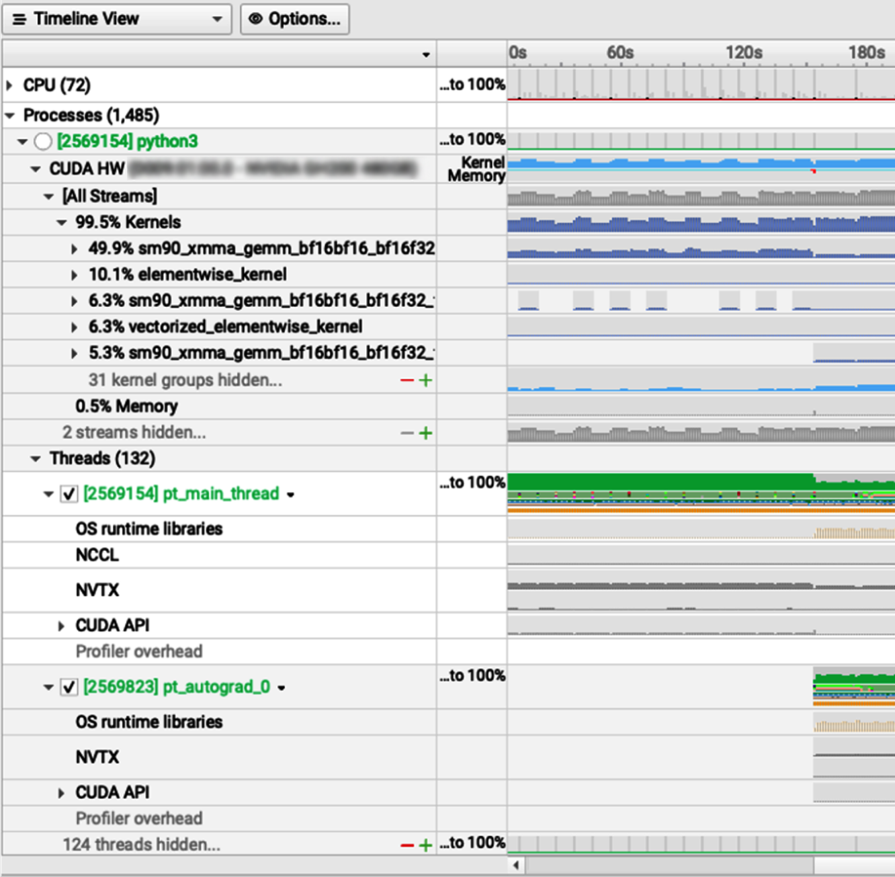
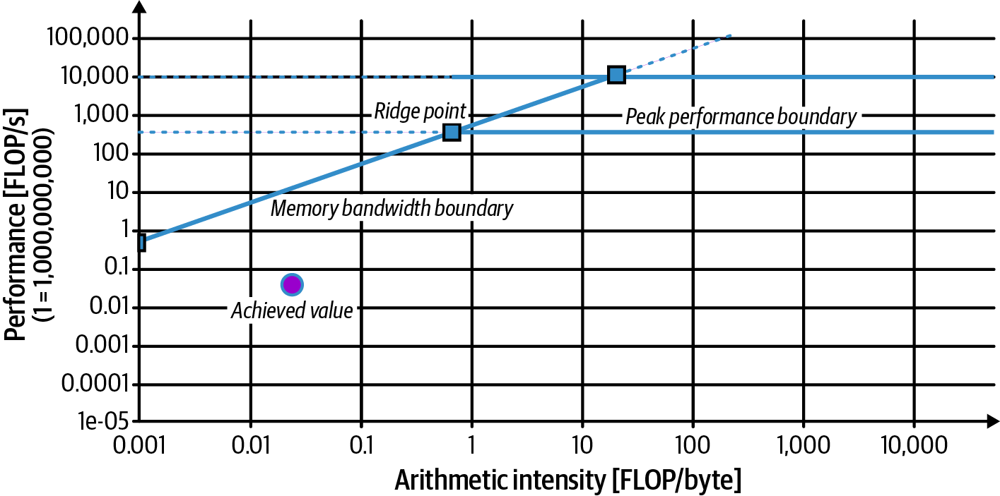
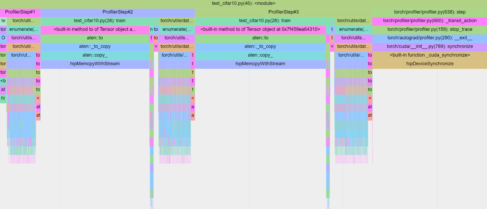
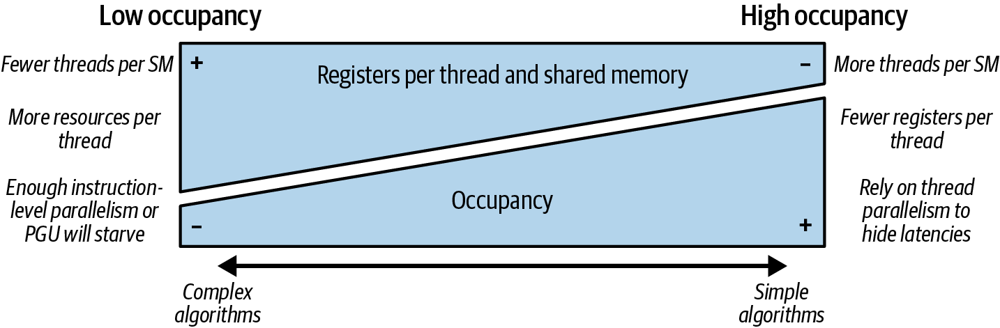
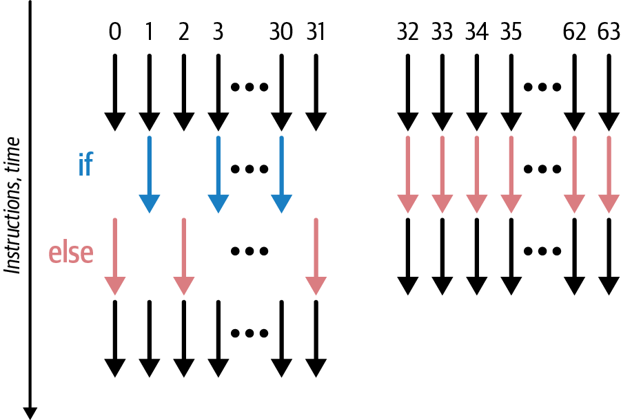
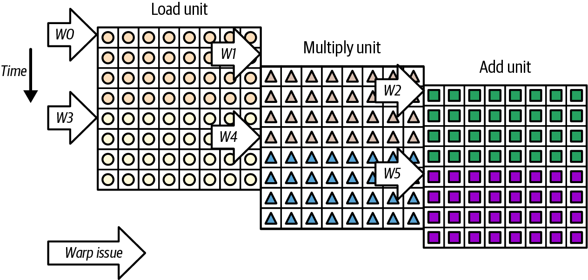
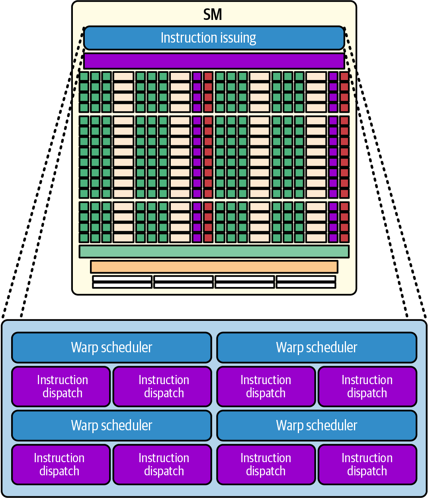

现代 GPU 加速 workload 正不断逼近硬件极限。以特定 Blackwell data-center GPU 为例，其两个接近 reticle limit 的 compute die 通过总带宽约 10 TB/s 的 NV-HBI 互连，并配有 126 MB L2 cache；这些数字并不适用于所有 Blackwell 产品。此类硬件设计会显著改变 memory 与 compute 之间的权衡，也会改变合适的 occupancy 区间，因此 profiling 与优化比以往更加重要。在前述 memory optimization 基础上，本章将转向更高级的 latency-hiding 方法和 throughput 优化，以更充分地利用现代 GPU。
我们将首先识别性能瓶颈，再系统地选择并验证相应优化策略。核心主题包括调节 occupancy、提高 warp efficiency，以及增加 instruction-level parallelism（ILP，指令级并行）。
学完本章后，你将能够识别 GPU 利用不足的根因，并组合使用适合的优化方法。本章也会为后续更高级的技术打下基础，例如 kernel fusion，以及使用 CUDA Graph 和 CUDA stream 等 primitive 构建 pipeline；这些内容将在后续章节介绍。
虽然本章主要讨论 CUDA C++ 等较高层语言和 PyTorch 等 AI framework，但 profiling 与调优原则贯穿整个 software/hardware stack。理解底层硬件性能，对于诊断较高层 abstraction 难以彻底解决的瓶颈仍然至关重要。
开始优化之前，必须先识别代码中的瓶颈，确定究竟是哪一种硬件或软件资源限制了性能。现代 NVIDIA GPU 十分复杂，性能下降可能源自 memory bandwidth、memory latency、instruction throughput、同步开销、并行度不足或 host-device transfer 延迟等多种因素。
NVIDIA profiling 工具生态包括 Nsight Systems（命令行工具 nsys）和 Nsight Compute（命令行工具 ncu）。Nsight Systems 采集 CPU thread、GPU kernel 和 memory transfer 的系统级 timeline；在相应配置和环境下，它还可以采集 Python backtrace 与 sampling 数据。
结合 PyTorch profiler 和各种 visualization 工具，Nsight Systems 与 Nsight Compute 可以帮助诊断 kernel 性能瓶颈、分析 Roofline 图，并衡量迭代优化的实际效果。两者观测层级不同：Systems 侧重系统 timeline，Compute 侧重单个 kernel 的硬件 counter。
Nsight Systems timeline 视图有助于发现 concurrency 问题、transfer 开销和 idle period。例如，可以运行下面的命令，采集详细 timeline，用于观察 kernel launch 是否重叠、CPU preparation gap、data-transfer timing，以及由 NVTX 标记的 range：
nsys profile \
--trace=... \
--capture-range=... \
--force-overwrite=true \
<application>
此外，Nsight Systems GUI 支持交互式检查 timeline。它可以可视化 CPU thread、GPU kernel 和用户定义的 NVTX range，并通过缩放和平移进行细致分析（见图 8-1）。
对于复杂应用，NVTX annotation非常有用。可以在代码中用 NVTX range 标记关注区域，再让 Nsight Systems 按 range 控制或分析采集。CUDA profiler Start/Stop API 也可用于 capture control，但在 framework workflow 中，NVTX range 往往更便于标注业务阶段。例如，可以通过 PyTorch 的 torch.cuda.nvtx 使用 NVTX range push/pop，标记“forward pass”和“backprop”等阶段。这样能够清晰划分关键计算区段，使 timeline 更容易解释；是否能严格按 NVTX range 启停采集，则取决于具体 `nsys` capture 配置。

如前所述，Nsight Systems 可以从较高层观察完整 pipeline，包括数据加载和处理步骤。例如，在 training loop 中，如果 CPU 正忙于准备数据或执行 augmentation，而 GPU 处于 idle 状态，那么瓶颈可能并不在 GPU kernel，而在 data pipeline 本身。
在真实且具有代表性的数据集上确认 data pipeline 是瓶颈后，可以调节 data loader 的并发度。在 PyTorch 中，这通常涉及 DataLoader worker process 数、prefetch 和 persistent-worker 等配置，而不只是 thread 数。还可以通过 producer/consumer buffer 让 CPU preprocessing 与 GPU compute 重叠，或者在收益大于 transfer 和 GPU resource 开销时，把更多 preprocessing 移到 GPU。每项调整都应同时观察 throughput、GPU idle gap、CPU 利用率和 host-memory 占用。
务必确认看似“GPU 性能问题”的现象，是否实际上由 kernel execution 上游或下游的环节引起，例如数据加载、CPU preprocessing、同步、通信或输出处理。
通过 profiling 建立清晰的端到端视图后，就可以进一步分析具体瓶颈。接下来的几个小节将先介绍 Nsight Compute、Roofline、PyTorch Profiler 和 profiler-guided analysis，再进入 occupancy 调优等核心优化技术。足够的 eligible warp 有助于隐藏某些 latency，但更高 occupancy 并不必然带来更高 throughput，后文将进一步讨论这种权衡。
另一方面，Nsight Compute（ncu）用于采集单个 kernel 的深入 metric。例如，它可以报告 achieved occupancy、每 cycle 发出的 warp instruction、memory throughput、execution-pipeline utilization 等。把这些 counter 与 kernel 配置、输入和执行时间结合起来，可以建立较完整的 kernel-level 性能画像；但它不能取代 Systems 提供的端到端系统视图。
这些 metric 按 memory、compute、scheduler、launch 和 throughput 等 section 组织。Nsight Compute 的自动分析规则能够标记某些低利用率、branch divergence 或 stall 现象，并给出优化提示；规则和 metric 会随 GPU architecture 与工具版本更新。它们可以帮助形成 memory-bound、latency-bound 或 execution-pipeline-bound 等假设，但 FLOP/byte、stall reason 或单个 utilization 指标通常不足以独立证明根因，还需交叉验证。
Nsight Compute 还提供 Roofline 分析与自动指导，可以把 kernel 的 achieved FLOP/s 和 arithmetic intensity 投射到相应 hardware ceiling 上，帮助判断它与 memory-bandwidth roof 或 compute roof 的距离。
Roofline model 用 memory-bandwidth ceiling 与 compute-throughput ceiling 的最小值，描述给定 arithmetic intensity 下的性能上界。Nsight Compute 可以按其支持的 precision 和 memory-byte 口径计算 kernel 的 achieved FLOP/s 与 arithmetic intensity（FLOP/byte）。若 arithmetic intensity 位于 ridge point 左侧，且测得性能接近相应 memory roof，才有较强证据说明 bandwidth-bound；接近水平 compute roof 则表明 compute throughput 可能是主要限制。仅仅“落在 memory roof 下方”不能证明 memory-bound，因为几乎所有未达到 ceiling 的点都在 roof 下方，latency、dependency、occupancy 或 instruction mix 也可能造成差距。应确认 FLOP 计数、byte 所属 memory level 和 precision，再与目标硬件的相应 roof 比较。示例 Roofline 图见图 8-2。

一种常用方法是先用 Nsight Systems 在 timeline 中找到耗时较多的 kernel、同步空隙或其他瓶颈操作，再用 Nsight Compute 深入分析选定 kernel。这个从系统级视图逐步下钻到 kernel-level counter 的两阶段 workflow，是处理复杂 GPU 性能调试与调优的常见方式。采集 Compute counter 可能需要 replay 并扰动执行，因此应使用代表性但受控的 workload，并把结果与未插桩基准时间对应起来。
使用 PyTorch 等高级 framework 时，torch.profiler API 可以在 model training 或 inference 期间采集 operator、CPU 与 CUDA activity 等性能数据。PyTorch Profiler 底层使用 Kineto 组织相应的数据采集与 trace。
Kineto 可与 CUDA Profiling Tools Interface（CUPTI）后端集成，采集 operator execution time、GPU kernel launch 和 memory copy 等 activity；某些扩展配置或后端还可提供额外性能数据，但不能把默认 PyTorch Profiler trace 等同于 Nsight Compute 的完整 hardware-counter 集合。Kineto 也可在受支持的平台和配置下结合 Linux perf 等 CPU 数据源。它把事件关联为按时间排序的 trace，可通过 PyTorch Profiler/TensorBoard 相关界面，或将 Chrome trace 格式导入 Chrome tracing/Perfetto 等兼容 viewer 查看。不同 trace 格式不能假定可被 Nsight Systems GUI 直接互换导入。示例 Chrome trace 可视化见图 8-3。

PyTorch Profiler 可以帮助定位 model code 中耗时较高的 operation。例如，可以用 torch.profiler.profile(..., with_flops=True, profile_memory=True) 分析 training loop，记录 profiler 所跟踪的 memory allocation，并为 matrix multiplication 等受支持 operator 估算 FLOP。这里的 FLOP 是 operator-level 公式估算，而非每个 kernel 的 hardware counter；memory profile 也不等同于完整的 allocator lifetime、峰值 device memory 或 DRAM traffic。该集成有助于把 PyTorch model code 与底层 CUDA activity 对应起来。
现代版本的 Nsight Systems在受支持的平台与配置下可采集 Python call-stack sampling，并可能提供 PyTorch 相关 trace domain，从而把 framework activity 与系统 timeline 关联起来。具体功能名称和支持范围随版本变化。Nsight Compute 可将 CUDA C/C++ source 与 PTX/SASS 关联；编译 device code 时使用 -lineinfo 可提供 source-line mapping，但也必须保留相应 binary/source 信息。要关联 Python model phase 与 kernel，可以通过 torch.cuda.nvtx 添加 NVTX range。Nsight Compute 的 source view 还可显示 instruction mix 和 throughput/stall 相关数据，不过 source line 上的归因是采样或 counter 映射结果，不应理解为该行单独造成全部瓶颈。
过去，Python 信息关联能力有限，降低了部分 PyTorch 开发者使用 Nsight Systems/Compute 的意愿。当前版本在相应平台和配置下已经改进 Python、NVTX 与 framework activity 的关联，因此值得结合 PyTorch Profiler 使用，以获得更完整的系统级与 kernel-level 分析。
本节给出一套诊断 GPU 瓶颈的 workflow，说明如何解释关键 profiler metric，以及它们能为瓶颈类型提供哪些证据。后文将用 Nsight Compute 深入分析 kernel，包括 warp stall 与 memory throughput；同时用 Nsight Systems 分析 application-level concurrency 和 CPU-GPU overlap。
关键在于用这些观测结果指导下一步实验，因为不同瓶颈需要不同优化。可以参考 Nsight Compute 的 guided analysis rule；根据工具版本和采集 section，它可能提示 memory workload 较高、L2 transaction 相对计算量较多，或 issue stall 与某条 execution pipeline 的 contention 相关。这些提示应视为待验证的假设，而不是固定名称或已经成立的根因结论。
Nsight Compute 会针对包括 Blackwell 在内的新架构更新 metric、section 和分析规则。它们可以把注意力引向 memory throughput、instruction dispatch、dependency latency 或 latency hiding 等方向，缩小需要检查的 counter 与代码范围，从而加快诊断；但最终仍需通过受控实验，例如改变 data size、访问模式、launch configuration 或 instruction mix，并观察执行时间是否按预期变化，才能确认瓶颈。
如第 6 章所述，NVIDIA GPU 以 SIMT 方式执行 warp，每个 warp 通常包含 32 个 thread。当 warp scheduler 无法从某个 warp 发出下一条 instruction 时，profiler 会按采样时的 warp state 对原因分类。这里的 “stall” 是 scheduler-level 状态，不一定表示整个 SM 或 kernel 停止工作，因为 scheduler 可能从其他 warp 发射 instruction。
Nsight Compute 的 Warp State Statistics 可展示 kernel 中各类 warp state，通常也被称为 warp stall reason。这些数据有助于缩小调查范围，但单个类别往往对应多种上游原因，不能只凭最高百分比直接确定限制因素。
常见类别涉及 memory dependency、execution dependency、pipeline throttle、barrier，以及 eligible warp 未被选中等状态。具体 metric 名称和定义随 GPU architecture 与 Nsight Compute 版本变化。下面逐项讨论其中若干类别。
如果 “Stall: Exec Dependency” 占比较高，通常表示warp 的下一条 instruction 正在等待前序 compute instruction 的结果。例如，后一条 instruction 依赖尚未完成的前一条 instruction。这可能表明 thread 内可用于覆盖 latency 的 instruction-level parallelism 不足，或存在较长的 arithmetic dependency chain；具体名称和涵盖 pipeline 仍应以目标 Nsight Compute 版本为准。
在一串相互依赖的 arithmetic operation 中，后续 instruction 必须等待前序结果，因此该 warp 暂时不能发射依赖 instruction。不过 scheduler 仍可能执行其他 warp。如果 execution dependency 占比较高，且 execution-pipeline throughput 未饱和，kernel 可能受 compute dependency latency 限制；还需结合 eligible warp、issue rate、instruction mix 和 occupancy 判断，不能仅由该比例推导 ALU latency bottleneck。
如果某条 compute pipeline 的 throttle state 占比较高，且对应 FP32、FP64 或 Tensor Core pipeline 的 active/throughput utilization持续接近目标架构的相应 peak，kernel 才较可能受该 compute resource 限制。此时，eligible warp 有 instruction 可发射，但所需 execution pipeline 暂时不能接收更多 instruction。旧版或概括性文案可能称为 “Compute Unit Busy”“ALU pipe busy” 或 “Math Pipe Throttle”，现代报告常使用更具体的 pipeline metric。Throttle 表示采样时所需 pipeline 忙碌，不等于所有 math unit 在每个 cycle 都饱和；power 较高也不是 compute-bound 的充分证据。
此外还有 instruction fetch、barrier、dispatch、texture/L1TEX throttle 等类别。某些旧报告或概括性资料使用 “Memory Dependency” 一词，现代 Nsight Compute 往往通过 Long/Short Scoreboard 等更具体状态描述依赖；必须按目标版本定义解释，不能把多个类别简单视为同义词。
“Texture Throttle” 或相应 L1TEX throttle metric 表示相关 request pipeline 暂时无法接收更多 instruction，但不必然证明 cache capacity 或 bandwidth 是最终瓶颈。“No Eligible” 表示 scheduler 当周期没有可发射下一条 instruction 的 warp，可能源自 dependency、barrier、低 residency 或 workload tail；“Idle” 的精确定义应按报告版本核对。两者都不能只归因于先前同步或 launch 的 warp 数不足。
实践中无需死记每个 stall reason。先查看占比较大的 scheduler state，再把它与 instruction source、throughput、eligible/active warp 和实验变化联系起来。Memory-related state 占比较高并不自动等于 bandwidth-bound，execution dependency 较高也不自动等于 ALU latency 是唯一瓶颈。
如果某条 pipeline 的 throughput 接近其适用 peak，且其他证据一致，kernel 可能受该 execution resource 限制。“Not Selected” 较高通常表示存在多个 eligible warp，而不是并行工作不足；No Eligible/Idle 较高才可能提示 latency hiding 不足，但仍需区分 dependency、barrier、tail effect 和 residency。Warp-state breakdown 的作用是缩小候选瓶颈，而不是单独完成诊断。
Nsight Compute 可以按被分析的 kernel invocation 汇总这些 warp-state metric。应选择代表性的 input、shape 和 execution phase，并注意 replay 与采样开销。极小测试 kernel 的 cache、occupancy 和 tail behavior 可能与真实应用不同，因此在下结论前应从可复现的现实 workload 采集数据。
表 8-1列出若干常见 warp stall reason、典型解释和可供验证的优化方向。名称与建议均需结合目标 Nsight Compute 版本和实际 kernel。
| Warp 停顿原因 | 含义/可能原因 | 可验证的优化方向 |
|---|---|---|
| Execution dependency | Warp 的下一条指令等待前序计算依赖。可能表示线程内 ILP 不足或依赖链较长。 | 在不显著增加 register pressure 的前提下增加独立工作，或重排 instruction。Loop unrolling 有时能暴露 ILP，也可能放大 code size/register usage。若 ILP 受限，可测试增加 eligible warp 是否能隐藏 latency，但不要只追求更高 theoretical occupancy。 |
| Memory dependency（Long Scoreboard stall） | Warp 等待经 L1TEX 路径的 memory dependency。其他独立 instruction 是否可继续取决于实际 dependency graph；请求不一定到达 DRAM。 | 检查 coalescing、cache locality、spill 和实际 DRAM/L2 traffic。可测试更多 eligible warp、软件预取或 shared-memory staging 是否改善时间。在支持 TMA 且方向、shape、alignment、descriptor 与 scope 条件满足的 Hopper/Blackwell 路径上，TMA 可用于特定 bulk/multidimensional copy；它不是所有现代 GPU 或所有 memory copy 的默认方案。 |
| Synchronization（barrier） | Warp 等待 __syncthreads() 或其他 barrier 的依赖条件满足。可能源自同步频繁、参与者工作不均或 barrier 前的长 latency。 |
在保持 memory-ordering 和 correctness 的前提下移除冗余 barrier、平衡工作，或采用语义匹配的更小 synchronization scope。Warp-level 或 cluster-level primitive 不能直接互换；必须保证参与集合、visibility 和 architecture support 正确。 |
| Instruction fetch/issue | Warp 可能等待 instruction fetch，或因所需 dispatch/execution pipeline 暂时不可用而无法 issue；应按具体 stall metric 区分这两类原因。 | 若证据指向 instruction-cache/code-size 问题，可测试减少过度 unrolling 或拆分 kernel，但拆分会增加 launch 和 intermediate-memory 开销。若是 pipeline throttle，可调整 algorithm/instruction mix 或暴露跨 pipeline ILP，并检查 compiler 生成结果。 |
| Not selected（scheduler） | Warp 已 eligible，但 scheduler 在该 cycle 选择了另一个 eligible warp。它不是 dependency stall，通常说明存在多个可选 warp。 | 通常无需直接优化这一比例。它表明 scheduler 有其他工作，但并不证明 theoretical occupancy 很高或性能已最优。CUDA 一般不提供用于纠正所谓单 warp “独占 scheduler” 的通用 scheduler hint；应优化真实的 throughput、dependency 和 workload balance。 |
解释这些 stall reason 后，可以设计更有针对性的优化实验。例如，memory dependency 较高时，可分别测试增加 eligible warp、改善访问模式或异步预取，并用执行时间与 memory counter 判断哪一种假设成立。
Execution dependency 较高时，可以测试增加 ILP 或重排代码；barrier state 较高时，则检查同步必要性与工作不均。Profiler 的价值在于指导可证伪的实验，而不是根据单一比例机械套用优化。
Profiler 报告的另一项重要 metric 是achieved occupancy，通常表示采样期间每个 SM 的平均 active warp 数，相对于该架构每 SM 最大 resident warp 数的比例。例如，若目标 GPU 每个 SM 最多 resident 64 个 warp，而 achieved occupancy 为 30%，则平均约有 19.2 个 active warp/SM。它与 theoretical occupancy、eligible warp 数和 issue efficiency 是不同概念。
较低 achieved occupancy 有时意味着可用于隐藏 latency 的 resident warp 较少，但并不自动等于硬件利用不足：具有较高 ILP 或受固定资源限制的 kernel 可能在较低 occupancy 下达到最佳性能。反之，接近最大 occupancy 也不保证高性能；memory bandwidth、instruction dependency、访问模式或其他 pipeline 仍可能成为瓶颈。
因此，简单增加 thread 数通常不足以解决问题，甚至可能改变 block residency 或增加资源竞争。应根据证据检查 memory coalescing、arithmetic intensity、warp-level efficiency、ILP 和 workload size。后续小节将讨论这些技术。
Nsight Compute 还会报告 theoretical occupancy limiter，说明在给定 block size、register allocation、static/dynamic shared memory 和架构 residency limit 下，哪项资源限制了每 SM 可驻留的 block/warp 数。例如，register limiter 表示编译后的每 thread register 用量及 allocation granularity 限制了更多 block/warp 同时驻留。
Shared-memory limiter 表示每 block 的 static/dynamic shared-memory allocation 限制了 residency。Thread/block limiter 则可能来自每 block thread 数、每 SM thread/warp/block 上限及其取整效应；grid 过小造成的 SM 利用不足属于 launch/workload coverage 问题，不应与单 SM theoretical occupancy limiter 混为一谈。
这些 limiter 为实验方向提供线索。例如，register 是限制因素时，可以检查是否能通过算法、lifetime 或 compiler option 降低 register pressure；__launch_bounds__ 是对 compiler 的 launch constraint/hint，可能改变 register allocation 和 spill，并不保证允许更多 block 或提高速度。Shared memory 是限制因素时，可以测试较小 tile 或较少 stage，但这也可能降低复用与 arithmetic intensity。
Occupancy 增加到一定程度后通常会出现收益递减；所需最低水平取决于 dependency latency、ILP、scheduler 和 workload。即使 10%–20% occupancy 也不必然性能较差，而追求 100% 可能因 register spill、较小 tile 或额外 instruction 反而减速。应以执行时间和 eligible-warp/throughput counter 判断最佳点。
因此，还应检查 occupancy 之外的 hardware utilization。Nsight Compute 可报告 achieved memory throughput、按支持口径估算/测量的 compute throughput、instruction/issue rate、issue-slot utilization 及各 execution pipeline 统计。只有将 metric 的分母、precision、clock 和 peak normalization 与目标架构对应起来，这些数字才能说明 kernel 距离某项 physical ceiling 有多远。
例如，如果 DRAM throughput 持续接近适用 peak，且 Roofline、sector 与时间变化也一致，那么 kernel 很可能受 memory bandwidth 限制；低 ALU utilization 本身并不足以证明这一点。反之，某条 compute pipeline 的 throughput 接近相应 peak而 memory throughput 较低，才支持 compute-resource bound 的判断。优化也不只限于降低 precision 或改用 Tensor Core：FP16、FP8、FP4 会改变数值精度、layout 和支持矩阵，Tensor Core 还要求适用 operation、shape、dtype 与 data movement。
如果 compute 与 memory throughput 都低，可能存在长 dependency latency、同步、launch/tail effect、低并行度、instruction issue 限制或其他 bottleneck。这可能与较低的instruction-level parallelism有关，也可能是 workload/grid 太小、resident/eligible warp 不足或 pipeline imbalance；需要进一步区分。
可以用 Roofline model 组织这项分析：它把 kernel performance（FLOP/s）画在 arithmetic intensity（FLOP/byte）横轴上，并用compute roof和由 bandwidth × arithmetic intensity 得到的memory roof定义上界。应明确采用的 precision 与 memory-byte level。
如果 FLOP/byte 低于 hardware ridge point，Roofline 上界由 memory roof 决定，但只有实际点接近该 roof 时，才能较有把握地判断 bandwidth-bound；远低于 roof 仍可能是 latency、dependency 或其他 ceiling。若 arithmetic intensity 较高但实际 FLOP/s 远低于 compute roof，则可能受 dependency latency、ILP、occupancy、instruction mix 或未被模型纳入的资源限制。
不少 GPU 世代中，特定低精度 compute peak 的增长速度高于 HBM bandwidth，使相应 compute-to-bandwidth ratio 上升，某些未提高 arithmetic intensity 的 kernel 因而更容易受 data movement 限制。但这一趋势依产品、precision、memory tier 和 workload 而异，不能概括为所有新 GPU 与所有 kernel 都会越来越 memory-bound。
实践中，应同时比较 kernel 的 memory throughput 与相应 memory-level peak，以及 compute throughput 与相应 precision/pipeline peak，并结合 arithmetic intensity、执行时间和 stall/issue 数据。这些比较可以帮助选择下一项关于 memory access、compute 或 parallelism 的实验，但不能仅凭两个百分比完成归因。下面分别讨论。
Nsight Compute 可以报告 kernel 的 memory throughput（GB/s）及相对于相应 peak 的比例。若持续 achieved DRAM throughput 已接近目标设备在当前 clock/ECC/traffic mix 下可达到的 bandwidth，并且 Roofline 与实验结果一致，那么单纯增加相同数据上的 compute work 通常不会缩短时间；应减少每项有效工作对应的 DRAM byte，或增加能复用已加载数据的有效计算，从而提高 arithmetic intensity。
降低数据 precision 可以减少 operand/intermediate byte，但前提是数值精度与硬件路径允许；Tensor Core 主要提高适用 matrix/tensor operation 的 compute throughput，本身不保证减少 global traffic。Kernel fusion 可避免某些 intermediate tensor 写回和重新读取，从而提高 arithmetic intensity。增加 concurrency 或更多 warp 可能隐藏 latency，却不会改变算法的 FLOP/byte，因此应与减少 memory traffic 区分。
例如，DRAM throughput 达到某个经验阈值（如 peak 的约 80%）可以作为 bandwidth pressure 较高的线索，但不是跨 GPU、metric 和 workload 的固定判据。应确认读写合计方式、sustained peak normalization、采集时间，以及性能是否会随减少 DRAM byte 或改变 memory clock/bandwidth 而变化。
特定 data-center Blackwell GPU 配有 126 MB L2 cache，并用总带宽约 10 TB/s 的 NVIDIA High-Bandwidth Interface（NV-HBI）连接两个 compute die，对 software 呈现为一个逻辑 GPU。这些规格不适用于所有 Blackwell 产品，而跨 die/cache slice 的实际 locality、contention 和 latency 也不能只用总互连带宽概括。相较旧 GPU，更大的 L2 可能让部分 working set 获得更高 hit rate，但是否缓解瓶颈取决于 footprint、reuse、mapping 和并发 traffic。
可以使用 Nsight Compute memory chart 和相关 counter 区分 L1TEX、L2 与 DRAM traffic。较高 L2 hit rate 可能减少 DRAM byte，但不自动意味着 kernel 已 compute-limited：L2 bandwidth、latency、request efficiency 或其他 pipeline 仍可能限制性能。应同时检查各层 byte/throughput、hit/miss、sector 和 execution time。
CUDA 的 L2 persisting-access 机制可通过 access-policy window 和相应 set-aside 配置，为选定访问提供 persistence hint；该能力并非 Blackwell 独有，也不保证 working set 永久驻留。可用容量、替换行为、并发 stream、MIG 模式和目标架构支持都会影响效果，应以 CUDA 文档与实测为准。
Achieved FLOP/s 较低可能源自 occupancy/eligible warp 不足、memory dependency、instruction dependency、pipeline imbalance，或算法本身包含大量不计入 FLOP 的 instruction。例如，平均 active warp 较少或 compute pipeline 经常因 memory dependency 无法获得可发射工作时，kernel 可能远低于 compute roof；但 30% occupancy 本身不能证明这是原因。
可以结合 Nsight Compute 的 Occupancy section、Scheduler Statistics、Source Counters 和 pipeline metric 定位问题。Grid 应有足够 block 覆盖目标 SM，而每 SM resident warp 上限由具体架构决定；64 warp/SM 只是某些设备的示例。无需也通常无法通过单个 block 填满该上限，实际目标是提供足够 resident/eligible warp，同时控制 register、shared memory 和 block-size 权衡。
同一 SM 内的 warp 共享该 SM 的 scheduler、register、shared memory 和 execution pipeline，并能在 scheduler 层面相互隐藏 latency，因此 occupancy 按 SM 定义和汇总。不同 SM 的 warp 不直接参与同一 warp scheduler，但仍可能通过 L2、HBM、interconnect、atomic 或其他 shared resource 相互影响，不能说它们“没有交互”。
还应检查 instruction issue efficiency 与各 execution pipeline throughput。特定 Blackwell device 集成许多 SM，因此每 SM 或 grid coverage 的利用不足会累积为较大的 device-level throughput 损失；双 die packaging 本身不会提高单个 SM 的 issue rate，还需考虑 workload 是否均匀覆盖所有 SM。
如果 achieved FLOP/s 中等或较高而 DRAM throughput 较低，kernel 可能以 compute 为主，也可能主要命中 cache，或受 compute dependency/pipeline throttle 限制。可以查看目标版本中对应的 execution-dependency state、eligible warp、issue rate 和 pipeline utilization，再通过重排独立工作等实验验证；单个 “Exec Dependency” 比例不能确认根因。
如果按相同 precision、dense/sparse 口径、instruction type 和实际 clock 计算的 compute throughput 接近相应可实现 peak，并且其他证据一致，kernel 才可视为受该 compute pipeline 限制。这既不证明所有 memory access 已经最优，也不意味着一定使用低精度 Tensor Core；不同 workload 可以在不同 execution pipeline 上接近各自 ceiling。
持续的高 compute utilization 可能使现代 GPU 达到 power、thermal、reliability 或 voltage/frequency policy 的限制，从而改变 clock。Profiling 与 benchmark 时应同时记录 power draw、clock 和 clock-event/throttle reason。下面的命令尝试实时查询这些字段，但具体字段名称与支持范围取决于 GPU 和 driver；应先用 nvidia-smi --help-query-gpu 核对：
nvidia-smi\--query-gpu=\power.draw,clocks.current.sm,clocks.current.memory,\clocks_event_reasons.active\--format=csv-l1
在字段受支持时，该命令每秒输出一行当前 power draw、SM/memory clock 与 active clock-event reason。它有助于把降频与 power/thermal 等状态在时间上对应起来，但 1 秒采样可能漏掉短暂事件，`power.draw` 与 enforced power limit 也不能单独区分所有降频原因。
还可以使用 NVIDIA Management Library（NVML）API，通过独立的 NVML C 接口 nvmlDeviceGetPowerUsage() 和 nvmlDeviceGetEnforcedPowerLimit() 等函数进行程序化查询，也可使用相应的 NVML Python binding。它们适合自定义脚本和监控系统，但并不是 CUDA C++ runtime API，支持的 telemetry 仍依设备、权限和 driver。
总之，应结合 occupancy、eligible warp、warp-state reason、memory throughput、compute throughput、clock 和执行时间诊断瓶颈。目标不是让所有 metric 都“高”或强求 Tensor Core utilization，而是让 workload 所需的资源得到有效使用，并以正确性与端到端时间证明优化。
可以用四种常见状态组织 GPU 性能诊断：device underutilization、latency-bound、memory-bandwidth-bound 与 compute-resource-bound。它们不是互斥的物理定律，同一 kernel 可能同时受多个 ceiling 影响；但分别理解这些模式，有助于选择下一项实验。修复一个主要瓶颈后，另一个限制因素往往会变得可见。
Device underutilization 可能发生在 grid/problem 太小、kernel 之间存在 gap、并发度不足或 load imbalance 时。此时 compute 与 memory throughput 可能都低，timeline 也可能出现 idle 区间。增加可并行工作后，后续表现不一定必然转为等待 memory load，还可能暴露 compute、synchronization 或其他瓶颈。
Latency-bound 与 bandwidth-bound 都可能涉及 memory，但证据不同。Latency-bound kernel 的 achieved bandwidth 可能远低于 peak，同时 warp 因 dependency 缺少可发射工作。可以测试增加 eligible warp、ILP、prefetch 或 pipeline 是否改善 overlap；这些方法并非总能提高性能，还可能增加 resource pressure。
Memory-bandwidth-bound kernel 的 DRAM throughput 接近相应可实现 peak，且性能随 memory byte/bandwidth 变化。Compute pipeline 利用率可能较低，并常伴随 memory dependency state；原文所谓“不是因为 stall”并不成立。优化方向包括通过 tiling/fusion/cache reuse 提高 arithmetic intensity、改善 request efficiency，或在数值允许时降低 transferred byte。
Compute-resource-bound 表示某条 arithmetic/execution pipeline 的 throughput 接近相应 ceiling。Unrolling、software pipelining 或其他 ILP 技术只有在存在独立 instruction 且不过度增加 register/code-size 时才可能改善利用率。INT32 与 FP32 的并行 issue 能力取决于具体 GPU architecture、scheduler、execution pipeline 和 instruction mix，不能笼统断言所有现代 GPU 的“统一 core”都无法在同一 cycle 处理二者。
优化过程有时会经历 underutilized → latency-bound → bandwidth-bound → compute-bound 的变化，但这不是固定顺序，也不要求最终达到 compute-bound。每次改动后都应重新测量 correctness、时间和关键 counter，因为瓶颈可能移动、并存或重新出现。
结构化流程应从可复现的 baseline 开始：先用 Nsight Systems 查看 application-level concurrency、idle gap 和 transfer，再用 Nsight Compute 分析选定 kernel 的 warp state、occupancy、memory 与 compute pipeline，并用受控改动验证假设。
综合这些证据后，可以把主要问题暂时归入 memory bandwidth、compute resource、latency hiding 或 device underutilization 等类别。这里的 underutilization 指 workload 没有让足够多的 device resource 获得有效工作，而不只是“instruction issue 数不够”。表 8-2汇总了这四种诊断模式、常见信号和可验证的优化方向。
| 主要限制因素 | 描述 | Profiler 信号 | 可验证的优化方向 |
|---|---|---|---|
| Memory-bandwidth-bound | DRAM traffic 接近可实现 peak bandwidth，但每 byte 的有效工作不足以让 compute pipeline 达到高利用率。 | DRAM throughput 接近匹配口径的 peak，performance 接近相应 memory roof；compute throughput 可能较低。 | 通过 tiling、fusion 或 cache reuse 提高 arithmetic intensity；改善 coalescing/request efficiency；减少不必要的 transferred byte，并验证执行时间随 byte/bandwidth 变化。 |
| Compute-resource-bound | 某条 arithmetic/execution pipeline 成为主要限制；这不要求 memory latency 已完全隐藏，也不要求所有 ALU/Tensor Core 同时饱和。 | 按相同 precision、dense/sparse、clock 和 pipeline 口径计算的 throughput 接近相应 peak；memory throughput 可能较低。 | 减少 dependency 与无效 instruction，测试 ILP/unrolling 或更适合的 algorithm。仅在数值、shape、layout 和硬件支持满足时使用低 precision、sparsity 或 specialized unit；fusion 也可能增加 register pressure。 |
| Latency-bound | Dependency latency 未被其他 eligible warp 或独立 instruction 充分覆盖，导致 scheduler 缺少可发射工作；来源可为 memory 或 compute dependency。 | Throughput 远低于相关 peak，并伴随 No Eligible、scoreboard/dependency state 或较低 issue rate。Not Selected 较高通常不是 latency-hiding 不足的证据。 | 在资源允许时测试更多 eligible warp、ILP、multiple accumulator、pipeline 或 prefetch；同时检查 cache miss、spill、barrier 和 dependency chain，避免为提高 occupancy 引入更多开销。 |
| GPU underutilization | Problem/grid、并发或 workload distribution 没有为足够多 SM 提供有效工作，device-level compute 与 memory resource 大量空闲。 | Device/timeline coverage 低，compute 与 memory throughput 均低；可能出现 kernel 间 gap、少量 active SM 或明显 tail。低 occupancy 本身不足以证明 device underutilization。 | 在语义和 memory capacity 允许时增加 problem/batch 或 block 数、批处理小任务、改善 load balance，或评估 fusion、persistent kernel（第 10 章）和 stream concurrency（第 11 章）；每种方法都有额外资源与调度成本。 |
Memory-bandwidth-bound kernel 的性能受 memory throughput 限制；更准确地说，其 arithmetic intensity 较低，实际 performance 接近相应 memory roof，并且 DRAM throughput 接近可实现 ceiling。此时即使有足够 thread，也无法靠增加同类并发请求继续提高 bandwidth；应减少每项有效工作对应的 byte 或增加数据复用。
相对地，compute-resource-bound kernel 的某类 arithmetic unit，例如 FP32 pipeline 或特定 Tensor Core pipeline，throughput 接近匹配 precision/clock/dense-sparse 口径的 ceiling。Achieved occupancy、memory utilization 和 execution-dependency state 可以提供背景，但确认分类还需对应 pipeline throughput、Roofline 位置和受控实验。
Latency-bound kernel 的关键问题是 dependency latency 没有被其他工作充分覆盖。例如，warp 发出读取 A[idx] 的 global-memory load 后，依赖该值的后续 instruction 会被 scoreboard 阻塞；并非所有 32 个 thread 都以独立实体“停住”，也不是该 warp 在 load 完成前绝对不能发出任何 instruction。若存在由 compiler/scheduler 可见的独立 instruction，它们仍可能先执行。实际 latency 还取决于 cache/TLB 命中与 memory path，并非每次都是固定的数百个 DRAM cycle。
Warp scheduler 可以在某个 warp 等待 dependency 时选择其他 eligible warp。但如果 resident warp 较少，或所有 warp 都处于相似的 load→dependent-compute chain，scheduler 可能没有足够可发射工作。此时问题是独立 operation/eligible warp 不足以覆盖相关 dependency latency，而不一定是每个访问都属于 long-latency DRAM。
改善 latency hiding 的一种方法是在 resource 与 workload 允许时增加 resident/eligible warp，使一个 warp 等待时另一个 warp 可运行。增加 launch thread 数只有在 grid coverage 或 residency 确实不足、且不触发更高 resource pressure 时才有帮助；超过 block/SM limit 后不会继续提高 occupancy。
同样重要的是增加 warp/thread 内可见的独立工作。本章后文会详细讨论 ILP。简而言之，如果每个 thread 在使用结果前先发出两个相互独立的 load，例如分别读取 A[idx] 和 B[idx]，硬件有机会让多个 memory request 同时 outstanding。这体现了 instruction independence，并提高 memory-level parallelism；是否实际重叠仍取决于 compiler code generation、dependency、queue capacity 和地址路径。
在资源允许时，第二、第三个独立 load 可以在第一个 request 未完成时进入 flight；某个结果返回后，其依赖 compute 便可能与其他 pending request 重叠。不过，更多 outstanding load 会增加 register/lifetime 与 memory-system pressure，若 bandwidth 或 queue 已饱和则可能没有收益。
适度 unroll 小型 loop 有时可以暴露多个独立 load 或 accumulator，从而增加 ILP/MLP；但 compiler 可能已自动 unroll，进一步展开也可能增加 register pressure、spill 和 instruction-cache footprint。应检查 generated code 并实测。
提高 ILP/MLP 可能让每个 warp 在某项 dependency 未满足时仍有独立工作，从而改善 latency hiding 和 throughput；但不会保证“始终”有足够工作，也不一定把 kernel 转入理想状态。收益上限由 register、outstanding request、bandwidth、pipeline 和算法依赖决定，应以执行时间验证。
当 GPU 因 problem/grid 太小或任务间 gap 而 underutilized 时，增加 batch、合并小任务或提供更多 block 可能提高 device coverage。但更大 batch 会增加 memory 和 latency，更多 thread 也可能不改变 grid tail 或 per-SM residency；应先确认真正缺少的是 device-level work，而不是 dependency 或其他 bottleneck。
实践中的性能调优应遵循可证伪的 workflow：建立 baseline，识别主要 limiting regime，做一项针对性改动，再验证 correctness、时间和 counter。Memory-bound、latency-bound、compute-bound 与 underutilized 可能并存。
若 kernel 受 memory bandwidth 限制，应优先减少实际 memory traffic 或增加 data reuse，例如改善 coalescing/request efficiency、cache reuse 和 tiling。提高 occupancy 或 ILP 主要用于隐藏 latency，并不会降低每项工作的 byte，也无法突破已经饱和的 bandwidth。
若 kernel 受 dependency latency 限制，应提供足够的独立 work in flight，例如每 thread 的独立 operation、更多 eligible warp 或适用的 pipeline/prefetch。目标不是保证 scheduler “始终”有 ready warp，而是在 register、shared memory、queue 和 bandwidth 约束内改善 issue efficiency。
若某条 compute pipeline 已接近匹配口径的 ceiling，可以考虑更高效的 algorithm、减少 dependency/无效 instruction，或在数值与硬件支持允许时采用 FP16/FP8/FP4、Tensor Core 等路径。Fusion 可能减少 memory round trip，也可能增加 register pressure。若 device underutilized，则先确认是 grid coverage、task gap 还是 load imbalance，再决定是否增加 block、batch 或 concurrency；低 occupancy 本身不等于 device underutilization。
下面列出一组高级优化方向。把 GPU 调优作为科学过程时，每项工作都应包括：提出 limiting-factor 假设、应用范围明确的改动、保持 correctness，并测量结果。
若 arithmetic intensity 较低且 performance 接近 memory roof，可通过 tiling/shared-memory reuse 减少重复 global access，通过 fusion 避免不必要的 intermediate round trip，并改善 coalescing 和适用的 shared-memory layout（相关基础见第 6 章）。Compression 或 lower precision 只有在编码/解码成本与数值语义允许、且确实减少所测 memory level 的 byte 时才有益。目标是缩短时间，不必刻意把 workload “转为 compute-bound”。
若某 compute pipeline 是主要限制，可在 register/code-size 可接受时使用 multiple accumulator、适度 unrolling 等 ILP 技术；检查 branch divergence（见第 6 章）及 instruction mix。Tensor Core 与 lower precision 只适用于支持的 operation、shape、layout 和 accuracy requirement；FP32 → FP16 → FP8 → FP4 不是普遍可行的线性升级路径，必须验证数值稳定性与实际 kernel selection。
若 dependency latency 未被覆盖，可测试更多 block/eligible warp、平衡 register/shared-memory residency、增加 ILP，或用 async copy/intra-kernel pipeline 重叠适用的数据搬运。多个 stream 只有在任务独立且硬件资源允许时才能实现 inter-kernel 或 copy/compute overlap（见第 11 章）。许多 tiny kernel 的 launch overhead 可通过 fusion、batching 或 CUDA Graph 等方式缓解；Cooperative Groups 是线程协作 abstraction，不会自动把多个 kernel 合并。
若 timeline 和 active-SM/grid-coverage 证据表明 device underutilized，应确保 grid/problem 能为足够多 SM 提供工作，并减少 task gap 与 tail imbalance。每个 element 一个 thread 并非错误，thread 工作量少也不意味着需要“更多 thread/element”；mapping 应由 operation、memory access、cooperation 和 launch overhead 决定。Multiple pass 还会增加 traffic，因此必须实测。
移除不必要的 cudaDeviceSynchronize() 或 host wait，但保留 correctness 和 timing 所需的 dependency。对于较小 workload，可评估 batching 或用 CUDA stream 并发执行独立实例。CUDA Graph（见第 12 章）可以降低重复 launch sequence 的 CPU overhead，但 capture、instantiate 和 update 也有约束与成本。
Blackwell 的部分 Tensor Core 路径在相应 PTX ISA 中使用第五代 instruction family，例如 tcgen05.mma 及配套的 tcgen05.ld、tcgen05.st。支持的 microscaling/block-scaled format（包括 MXFP8、MXFP4、NVFP4）、scale layout 与 MMA shape 取决于具体 architecture、PTX/Toolkit 和 library。Library 只有在 dtype、metadata、shape、layout 与实现条件满足时才会选择相应 kernel，并非出现 scale metadata 就自动使用。TMEM 参与特定 Tensor Core operand/accumulator 数据路径，TMA 负责受支持的 tensor copy；两者角色不同。后文及第 9 章将继续讨论。
每项优化后都重新 profiling，并首先确认 correctness 与未插桩总时间。再检查目标 metric 是否按假设变化，例如 tiling 是否减少实际 DRAM byte/scoreboard impact，block-size 调整是否改善 eligible warp 或时间。CUDA stream 主要改变 application-level concurrency，不能简单用单 kernel “SM Throughput %” 证明收益。一个瓶颈被缓解后可能暴露另一个，但只在业务目标仍未满足时继续优化。
使用 lower precision 或新的并行策略时，应与可信 reference 比较，并覆盖代表性输入、边界条件、随机性和长时间累积误差。只有应用明确接受时，才能用 accuracy 换 speed。FP16/FP8 在部分 AI model 上可通过 mixed precision、scaling 和校准保持可接受质量，但 “negligible impact” 不是普遍保证，必须按 model/task 验证。
回顾第 6 章：occupancy通常指 SM 上 active/resident warp 数相对于该架构每 SM 最大 resident warp 数的比例。Achieved occupancy 低于 50%只表示平均 active warp 不到最大值的一半，并不自动等于性能低；它可能由 register、shared memory、block/thread residency、grid coverage 或 kernel phase 等因素造成。
Occupancy以 warp residency 衡量并行资源，而不是把 active thread 与 warp 两种分母混用。更多 resident warp 有机会为 scheduler 提供更多 eligible warp：当一个 warp 等待 dependency 时，scheduler 可以从另一个 eligible warp 发射 instruction。但 latency hiding 还取决于 ILP、dependency pattern 和 execution resource，更高 occupancy 不保证更快。
在 latency hiding 不足时，增加每 SM warp 数可能让 pipeline 更繁忙；达到足够水平后，收益通常递减。Occupancy tuning 是调整 launch parameter 与 register/shared-memory 等资源使用，在 residency、per-thread work、data reuse 和 spill 之间寻找最佳实测点，如图 8-6所示。

Occupancy 调优的目标是提供足够 warp 来隐藏相关 latency 并支持有效 throughput，而不是以 100% 为理想终点。以 Blackwell B200 的 compute capability 10.0 为例，公开架构限制可包括每 SM 最多 64 个 resident warp，即 2,048 个 resident thread；实际可驻留数量还受 block、register 和 shared-memory allocation 等限制，并应通过目标设备属性确认。
部分 Ampere、Hopper 和 data-center Blackwell 型号的上限为 64 warp/SM，但不能据此概括所有现代 GPU；每代性能提升也不只来自更多 SM、更大 cache 或 multi-die。应使用 device attribute、CUDA Programming Guide 和 Nsight Compute Occupancy 分析确认目标设备。某些 compute capability 12.x 产品（如特定 NVIDIA RTX PRO Blackwell 型号和搭载 GB10 Superchip 的 DGX Spark）可能采用 48 warp、1,536 thread/SM 的上限；具体型号和版本仍应核对官方规格。
许多实际 kernel 在较低 occupancy 下仍能表现良好，例如其 dependency latency 较短、ILP 较高，或每个 warp 能为 Tensor Core 等高吞吐 pipeline 提供足够工作。反过来，过多 resident warp 也可能需要牺牲 register、tile 或 stage。
例如，compute-heavy kernel 可能在 50% occupancy 附近已达到最佳 throughput。Memory-latency-bound kernel 有时受益于更多 eligible warp；但真正 memory-bandwidth-bound 的 kernel 已接近 bandwidth ceiling，提高 occupancy 往往不能再增加 throughput。因此必须区分 latency 与 bandwidth。
实践中，occupancy 调优通常在达到足以隐藏主要 latency 后出现收益递减。例如，对 latency-hiding 不足的 kernel，从 10% 提高到 50% achieved occupancy 可能显著改善性能；但若它已经 bandwidth-bound，提高 occupancy 未必有类似收益。
从 50% 继续提高到 100% 可能收益很小，也可能因 register spill、较小 tile 或其他变化而减速。Profiling 有助于寻找最佳点，例如结合 eligible warps per cycle 与 active warps per scheduler，观察每个 scheduler 的 resident warp 中有多少在采样 cycle 已具备发射条件。
Eligible warps per cycle 表示每个 scheduler 在每 cycle 平均可发射下一条 instruction 的 warp 数。Active warps per scheduler 则是分配/驻留在每个 scheduler 上的平均 active warp 数，并不等于 SM 上 scheduler 的数量，也不是每 cycle 可 issue warp 的硬件上限。还应同时查看 issued warp、No Eligible 和具体 stall state。
如果 active warp 很多但 eligible warp 经常接近零，scheduler 可能缺少 ready warp，说明 dependency latency 未被充分覆盖。更高 occupancy 或 ILP 是候选方法，但也可能需要处理 cache miss、barrier、spill 或 dependency chain，不能只比较 eligible 与 active 两个平均值。
如果 eligible warp 供应充足但 issue rate 或性能仍低，可能是 dispatch/execution pipeline throttle、memory bandwidth、instruction mix 或其他 resource 限制，而不是“warp 有 dependency 所以无法 issue”这一自相矛盾的解释。此时应查看对应 pipeline 与 throughput counter。Coalescing、async copy 或 unrolling 是否适用，取决于已确认的瓶颈，而不是统一答案。应做受控实验。
提高 occupancy 后，若 eligible warp 和 issue efficiency 改善、No Eligible 减少且执行时间缩短，才说明 latency hiding 获益。“Not Selected” 可能因为可供选择的 eligible warp 增多而上升，并非应当下降；Idle 的含义也需按版本核对。High occupancy 下 Long Scoreboard 仍高时，应检查 actual memory path、cache/spill、访问模式和独立工作。
不存在跨 workload 固定的 60%–70% 收益递减点。最佳 occupancy 可能更低或更高，应扫描 block size、resource configuration，并同时观察 runtime、spill、eligible warp、memory locality 和 ILP。
即使 occupancy 很高，warp 仍可能等待 dependency、barrier 或受到 divergence/imbalance 影响。因此达到足够 latency hiding 后，应转向真实限制因素，而不是执着于 100% 或预设的 50%–70% 区间。
Occupancy 是实现 latency hiding 的一种手段，而不是最终目标。具备足够 eligible work 后，继续增加 resident warp 未必有益；应把优化转向 profiler 和执行时间所证明的下一个限制因素。
当 profiling 表明 residency/eligible warp 不足确实是限制因素时，可以测试增加 device-level work、调整 block size、改变 per-thread/per-block resource usage，以及使用 __launch_bounds__ 或 Occupancy API。它们主要影响 theoretical residency，不保证实际性能提升。下面分别讨论。
如果当前 grid 太小、没有覆盖所有 SM，增加可处理的 work/block 是改善 device utilization 的直接方法。但“每 SM 只 launch 20 个 warp”并不是 host launch 的固定映射；block 由 scheduler 分配到 SM，resident warp 数由 block size、资源和架构限制共同决定。增加 grid size 可以改善 coverage，增加 threads/block 则可能提高或降低 residency。
通常需要至少与 SM 数量同量级、并常常更多的 block，以减少 wave/tail 效应；但 block 数等于 SM 数并不保证全部 SM 同时有效繁忙。若 timeline/device metric 显示部分 SM 缺少工作，可在 memory/latency 允许时扩大或 batch workload。每 thread 的 register 与每 block shared memory 仍可能限制 residency。
Threads/block 会通过 warp 取整、per-SM thread/warp/block limit 和资源 allocation granularity 影响 occupancy。1,024-thread block 常使 resident block 数较少，但其中本身已有 32 个 warp，occupancy 未必低；128–256 thread 只是常见候选范围，不是普遍最优值。
最佳 block size 随 kernel 与 architecture 变化。较小 block 的总 register/shared-memory footprint 可能较低并允许更多 block 驻留，但 fixed per-block shared memory、allocation granularity、coalescing、cooperation 和 tail behavior 都会改变结果。
可以使用 Nsight Compute Occupancy Calculator 与 CUDA Occupancy API 生成 launch configuration 候选，再扫描实际执行时间、spill、memory access 和 eligible warp。
Occupancy Calculator 估算的是给定资源需求下的 theoretical occupancy/residency。最佳性能可能对应更低、相同或偶尔更高的配置目标，不能只按最大 theoretical occupancy 选择。
始终用实际 timing 验证 Occupancy API/Calculator 给出的 bestBlockSize 候选。较低 occupancy 的配置可能因更少 spill、更大的 tile、不同 instruction mix 或更好的 memory access 而更快。
每个 thread 消耗 register；shared memory 通常按 block 静态或动态分配，虽可按 thread 协作使用，却不能笼统称为 per-thread allocation。Register file、shared-memory capacity 及其 allocation granularity 会共同限制每 SM resident block/warp 数。
可以通过缩短 live range、减少不必要 temporary 或改变 algorithm 来降低 register pressure，从而可能允许更多 warp 驻留。也可以向 compiler 传递 -maxrregcount=<N>，尝试限制每 thread register 数。
Register cap 只是 compiler allocation constraint；只有跨过 register allocation/residency 阈值时才可能增加 resident warp，而且 compiler 可能无法完全按期望分配，或通过 spill 满足限制。必须检查 ptxas/SASS、local-memory traffic 和 achieved occupancy。
Cap 过低会把 live value spill 到 local memory，增加 instruction 与 cache/DRAM traffic。不存在“能最大化 occupancy 的最小 register limit”这一普遍最佳目标；应寻找使总执行时间最低且 correctness 不变的配置。
若每 block 使用大型 shared-memory tile/stage，shared memory 可能限制 resident block 数。可以删除未使用数据、调整 tile/stage 或复用 buffer，但改用 cache 或缩小 tile 可能降低 locality/reuse。释放容量只是一项权衡，并非无成本增加 occupancy。
减少 register 或 shared memory 过度时，会降低 ILP、增加 spill/global traffic 或减少 data reuse。Occupancy limiter 只能指出 theoretical residency 的限制资源，不能证明降低该资源一定更快；应结合执行时间与相关 counter。
例如，aggressive unrolling 可能触及目标 Blackwell 设备的 per-thread register 编码/架构限制或更早跨过 per-SM allocation 阈值。255 register/thread 是多种 NVIDIA 架构常见的上限口径，但实际 usable allocation、granularity 和设备限制应查询目标 architecture。减少 unroll 或拆分工作也可能增加 loop/launch/memory 开销。
__launch_bounds__在某些情况下，可以通过 __launch_bounds__ 向 compiler 声明 kernel 允许的最大 threads/block，以及可选的 minimum blocks/SM 等 launch assumption。它不直接“设定 occupancy”，而是影响 compiler 的 register allocation 与优化决策；违反最大 launch bound 的 launch 不合法。
若实测最佳配置约为 50% 而非 100% occupancy，这不必然表示 register/shared memory“过多”；也可能是更大的 tile、ILP 或其他配置更高效。只有在 compiler allocation 确实妨碍目标 launch/residency 时，__launch_bounds__ 才是候选工具。
__launch_bounds__ 的 maxThreadsPerBlock 限制合法 block size，可选 minBlocksPerMultiprocessor 会让 compiler 尝试控制 register 使用以支持该 residency。它不能直接减少 per-block shared memory，也不保证实际同时驻留指定 block 数，因为其他资源和架构限制仍然适用。
若 latency hiding 确实不足，改变 compiler allocation 后可能因更多 eligible warp 而提高 throughput，也可能因 spill 或较低 ILP 而减速。Compute-bound 与 latency-bound 都必须实测，不能由分类直接保证结果。
除 __launch_bounds__ 外，CUDA Occupancy API 函数（如 cudaOccupancyMaxPotentialBlockSize() 和 cudaOccupancyMaxActiveBlocksPerMultiprocessor()）可依据 kernel function、block size、dynamic shared memory 和设备属性估算候选 block size 或每 SM active block 数。Register 使用来自已编译 kernel；API 计算的是 occupancy/residency，不是运行时性能预测。
这些函数能减少 launch-configuration 搜索空间，但不能告诉你哪种配置在 memory access、ILP、spill、tail 和 workload shape 上最高效。实践中应枚举候选并 timing；__launch_bounds__ 会改变编译代码，不能在运行时用它“锁定”任意 occupancy level。
确定 launch configuration 后，还可以用 CUDA Graph降低重复 workload 的 CPU launch overhead。CUDA Graph 不直接改变 kernel occupancy，也不会因为 block 数增加而“改善 occupancy”；它主要减少 host submission gap，并受 capture/instantiate/update 约束。CUDA Graph 见第 12 章，PyTorch 相关内容见第 13、14 章。
总之，应分阶段 profiling：先确认 latency hiding/residency 是否限制性能，再用 calculator/API 生成候选，通过 compiler option、launch configuration 和资源设计进行实验。目标是以足够的 eligible warp 覆盖 latency，同时保留必要的 register、shared-memory reuse 和 ILP，而不是达到某个预设 occupancy。下面进一步讨论 __launch_bounds__、Occupancy API 和 PyTorch。
可以使用 CUDA kernel annotation __launch_bounds__ 向 compiler 提供 launch assumption。常用的前两个参数分别是允许的最大 threads/block（例如 256），以及 compiler 在 register-allocation 计算中采用的 minimum blocks/SM 目标。下面的代码使用 8，而不是原文上一句举例所称的 4：
__global____launch_bounds__(256,8)voidmyKernel(...){/* ... */}
这里声明 myKernel 的 launch 不得超过 256 threads/block；若实际超过该上限，行为不受支持。第二参数 8 不是让 GPU runtime “尝试保持”至少 8 个 active block，而是让 compiler 计算 register 上限时以支持至少 8 blocks/SM 为目标。Inlining 等其他优化是否改变，还取决于 compiler。
__launch_bounds__ 只有在目标设备的 thread、block、register 和 shared-memory 等全部限制都允许时，才可能使 8 × 256 = 2,048 threads/SM 理论驻留；annotation 本身不能保证运行时达到这一 residency。Compiler 根据 launch bound 推导 register threshold，可能降低 register 使用以满足 minimum-block 约束；在某些情形下，也可能利用可用 register 提高单 thread 性能。它不直接限制 shared memory，也不保证避免 spill、限制 unrolling/inlining 或提高 achieved occupancy。对于 B200 等具有 2,048-thread/SM 上限的设备，__launch_bounds__ 中的这一组合只是一个理论候选，必须检查编译报告、其他 residency limiter 和实测时间。
提高 occupancy 必须与每 thread 所需的 register/ILP 及每 block shared-memory reuse 权衡。过强的 register constraint 可能造成 spill；spill slot 位于 local memory address space，通常由 device memory 支撑并经过相应 cache path，并非每次都直接访问 HBM。应结合 ptxas register/spill 报告、Nsight Compute 的 register、local-memory traffic、occupancy/eligible-warp metric 和实际执行时间寻找最佳点。
可以在运行时使用 CUDA Occupancy API 估算 launch configuration，例如 cudaOccupancyMaxActiveBlocksPerMultiprocessor() 和 cudaOccupancyMaxPotentialBlockSize()。其中，cudaOccupancyMaxPotentialBlockSize() 根据指定 kernel 的 register 使用、每 block shared memory 和架构资源限制，计算有望最大化 theoretical occupancy 的 block size，如下所示。这里的“optimal”仅针对该 occupancy model，并不表示执行时间最短：
intminGridSize=0,bestBlockSize=0;cudaOccupancyMaxPotentialBlockSize(&minGridSize,&bestBlockSize,myKernel,/* dynamicSmemBytes = */0,/* blockSizeLimit = */0);// bestBlockSize contains number of threads per block that maximizes occupancymyKernel<<<minGridSize,bestBlockSize>>>(...);
该 API 返回在其资源模型中可能最大化 occupancy 的 threads/block 数。随后可将建议的 bestBlockSize 和 minGridSize 作为 kernel launch 的候选值；但后者是达到相应 occupancy 所需的建议最小 grid size，不一定是覆盖实际问题规模所需的 grid，也不能直接替代由数据规模决定的 grid 计算。
实践中，compiler 和 library 的默认 heuristic 往往已能给出合理配置；需要显式探索 resource/residency trade-off 时，可结合 __launch_bounds__ 与 Occupancy API 生成候选。它们适用于评估每 thread register、每 block shared memory 与 active warp 的取舍，但不会预测 memory coalescing、cache locality、ILP、spill、tail effect 或执行时间。因此仍应扫描附近的合法 block size，并用 compiler report、Nsight Compute 和端到端计时验证。
使用 PyTorch 编写高层代码时，通常不直接管理 occupancy，因为 PyTorch 的 CUDA kernel 和底层 library 会选择 launch parameter。Matrix multiplication、convolution 等常用 operation 通常已有针对受支持设备和 shape 的优化实现，但实际效率仍取决于 dtype、layout、shape、backend 和 hardware。
理解 occupancy 仍然有价值。若以 PyTorch extension 编写自定义 CUDA kernel，同样需要保证 grid 足以覆盖设备、选择合适的 block size，并在 register、每 block shared memory、ILP 和 residency 之间权衡；目标不是一味压低资源使用或最大化 occupancy。
即使只在 Python 层工作，也应留意 workload granularity。若 profiling timeline 显示 GPU 利用不足，例如只有少量 SM 在工作，原因之一可能是 tensor operation 太小，grid 不足以覆盖设备；也可能是 host launch gap、synchronization、data input 或其他瓶颈，需要结合 timeline 判断。
极小 workload 往往无法在大型 GPU 上良好扩展。此时可尝试 batching 或合并 operation，使每次 launch 完成更多有效工作。PyTorch graph compiler 可以使用 torch.compile fusion 某些 operation，从而减少 launch 和 intermediate-memory overhead；但 fusion 也可能增加 register pressure 或降低 parallelism，并不必然提高 occupancy 或性能。
torch.compile 可在底层生成 fused GPU kernel。它会在语义和 backend 条件允许时把多个较小 operation 合并为较大的 kernel，并可能在某些 workload 上接近手写 CUDA kernel 的效率。对于 shape 稳定且运行时间较长的 training/inference，可评估 torch.compile(mode="max-autotune")；对于 graph-compatible 的小 batch loop，可评估 mode="reduce-overhead"。这些 mode 是否以及如何使用 CUDA Graph，取决于 PyTorch 版本、backend、device 和 graph compatibility；不希望使用 graph 时，可评估 mode="max-autotune-no-cudagraphs"。第 13 章和第 14 章将深入讨论 PyTorch compiler 及其 mode。
PyTorch 内置 kernel 通常也包含经过调优的 launch heuristic。例如某些 reduction 和 elementwise implementation 会依据 device、tensor size、dtype 与 algorithm 选择 block size 和 block 数；这是候选配置 heuristic，而非对所有输入都“optimal”的保证。
查看 PyTorch 的 C++/CUDA 实现时，可以看到某些 algorithm 对 block size 设置上限，并选择足够的 block 以覆盖设备。这类逻辑综合考虑 occupancy、work distribution 和算法约束。为减少 optimizer 的 launch 与 memory-traffic overhead，可在目标 device、dtype 和版本支持时评估 fused implementation，例如 torch.optim.AdamW(..., fused=True)，并按数值精度要求配合 automatic mixed precision（AMP）；是否更快仍需测量。
对 PyTorch 用户而言，优先采用已针对常见路径优化的高层 library 和 operation 通常更稳妥。确需自定义 kernel 时，则应应用前述 occupancy 原则，并以实际 profiling 结果选择配置。
在了解如何提供足够的并行工作后，下一步是提高每个 warp 的执行效率。即使 occupancy 很高，若大量 lane 被屏蔽或 warp 频繁等待，性能仍可能受限。下面讨论 warp divergence 和 warp 内 thread cooperation 等 warp-level 优化。
即使良好的 occupancy 提供了足够多的 resident warp，每个 warp 内部的 lane 利用率仍然重要。Warp execution efficiency 类指标描述执行 instruction 时平均有多少 warp lane 处于 active 状态。同一 warp 内的 thread 采用不同 control-flow path，称为 warp divergence。等待 data load 则会使整个 warp 无法发射后续 dependent instruction，它属于 latency/stall 问题，不能仅凭这一点称为 lane divergence。
较低的 active-thread-per-warp 或 thread-inst-per-inst 类指标可能伴随 divergent branch 和大量 predicated-off lane，但 memory-related stall 是另一维度。诊断时应区分：control-flow divergence 会在不同 path 上以不同 active mask 执行，而 data dependency 通常使相关 warp 等待；两者可能同时存在，却不能从单个汇总百分比互相推导。
确认瓶颈后，可重构 control flow、改善 data grouping、减少不必要的 thread divergence，并在适用时使用 warp-level intrinsic 进行 warp 内通信。Memory coalescing 也很重要，但它优化的是 memory transaction/access efficiency，并不直接消除 branch divergence。
这些技术带来的收益没有通用的 5%–30% 区间，取决于 divergent region 占比、各 path 成本、active mask、compiler predication 和其他瓶颈。在 occupancy 与 memory access 已经调优后，仍应通过 source-level metric 和执行时间验证 warp-level 改动，而不是假定一定还能获得额外性能。
如第 7 章所述，当同一 warp 内的 thread 采用不同 control-flow path 时，就会发生 warp divergence，也称 branch divergence。例如，kernel 中有一个 if/else，warp 内一部分 thread 执行 if 子句，另一部分执行 else 子句。
在 SIMT execution 中，如果 compiler 没有把这段代码转换成其他等价形式，warp 会用不同的 active mask 执行所需 path：执行 if path 时，不采用该 path 的 lane 被屏蔽；执行 else path 时则反过来，随后在 reconvergence point 汇合，如图 8-7所示。
在 divergent region 中，每条 path 只有采用该 path 的部分 lane active，因此会降低该区域的 lane utilization。若 if 与 else 各由 16 个 lane 执行，且两条 path 的 instruction 数相同，则这两段 path execution 的平均 active-lane 比例为 50%；这不等于整个 kernel 的 throughput 必然下降 50%。若分布为 1 个 thread 对 31 个 thread，则在单 lane path 执行期间，另外 31/32 的 lane 被屏蔽，而另一条 path 的 active 比例是 31/32。

若 kernel 包含多个 divergence point，或 divergent path 承担大量工作，减少 divergence 可能带来显著收益。在一个严格的理想化情形中，两个等长 path 各激活一半 lane、该区域主导运行时间，且改写后只需执行等量的单一路径工作，理论上才可能接近 2×；实际收益还受额外 instruction、memory behavior、load balance 和其他瓶颈限制，多个 divergence point 的收益也不能简单相乘。
总体而言，warp divergence 会使部分 lane 在某些 path execution 期间被屏蔽，并可能使 warp 执行多条 control-flow path，增加 executed instruction 与有效工作的比值。因此，减少不必要的 intrawarp divergence 是提升 warp-level efficiency 的重要手段；但对本就需要执行不同工作的算法，还必须计入 regrouping、compaction 或额外 launch 的成本。
减少 warp divergence 的方法包括重构 condition、按数据或工作类型分组，以及在收益足以抵消额外开销时将不同 path 拆分到多个 kernel。
Branch divergence 的 active-mask serialization 发生在同一 warp 内。不同 warp 不会因为彼此采用不同 branch path 而发生这种 divergence；但它们仍会竞争 scheduler、execution pipeline、cache 和 memory bandwidth 等共享资源，因此不能笼统地说不同 warp 绝不会使彼此等待。
还可以使用 warp-unanimous branch、warp-vote intrinsic 和 predication。下面逐一讨论。
条件允许时，可组织 computation，使同一 warp 内的 thread 尽量采用一致的 execution path。例如，把 divergent condition 移出 inner loop、提升到更高层，或放入独立 kernel launch；也可对数据排序或分组，使每个 warp 处理更同质的 case。重排是否值得，取决于额外 memory traffic、latency、stability requirement 和后续 reuse。
例如，对数组中的负数和非负数采用不同处理时，直接在 kernel 中按 element 使用 if(x<0) 可能使混合符号的 warp divergence。另一种方案是先 partition 数据，再由不同 kernel 处理负数与非负数。这样能提高 warp coherence，但需要支付 partition/compaction、额外 storage、launch 和可能破坏原始顺序或 locality 的成本。
还可以把工作拆成多个 kernel launch：一个处理 if case，另一个处理 else case，并使用 prefix sum 或 compaction 把 item 分配给不同 kernel。它可消除处理阶段的相关 divergence，却会增加分类、memory traffic、temporary storage、synchronization 和 launch overhead。只有当 divergent path 足够昂贵、分类结果可复用或 batching 足够大时，收益才可能覆盖这些成本。
某些情况下，可把 condition 改写为 warp-unanimous，即一个 warp 的所有 active lane 对 condition 得到相同结果。常见方式是在 condition 中使用 warp index。例如先计算 int warpId = threadIdx.x / 32;，再让一半 warp 执行 task A、另一半执行 task B：if (warpId % 2 == 0) { /* Task A */ } else { /* Task B */ }。这里假设一维 block 且 CUDA warp size 为 32；更通用的代码可依据 linear thread index 与 warp size 构造 ID。
此时，同一 warp 内的 thread 一起进入 task A 或 task B，因此 branch 在 warp 内是 uniform 的；不同 warp 可以执行不同 path，而不会由此产生 intrawarp branch divergence。
每个 warp 仍需处理 condition，且这种方法约束了 work mapping。若 task A/B 的成本不同，还可能产生 warp/block 间 load imbalance。因此它是以调度灵活性换取 warp coherence，而不是无条件优化。
当工作能按完整 warp 的粒度划分、各组成本较均衡且不会显著损害 memory locality 时，可考虑 warp-unanimous branch。
Warp intrinsic（__ballot_sync、__any_sync、__all_sync）、Cooperative Groups 的 warp.ballot/any/all 类 operation，以及底层 PTX vote instruction（原文所写的 %WarpVote 并不是规范 CUDA 可编程接口）可让 warp 集体判断哪些 lane 需要“特殊”工作。Ballot 返回 lane mask，但不会自动 delegate、repartition 或 compact；程序必须根据 mask 使用 population count、prefix/rank、shuffle 等显式实现这些步骤。这样有时能缩短 divergent region，也可能引入额外 instruction、serialization 和 load imbalance，必须 profiling。后文将更详细介绍 warp intrinsic。
CUDA compiler 有时会对较短的 conditional code 使用 predication。Compiler 可把 if 转换为每 thread 的 predicate；predicate 为 false 的 lane 不写结果，且是否执行 address evaluation、memory access 或其他行为取决于具体 instruction 与生成代码。它不应简单理解为 compiler 总是让所有 thread 完整计算两条 high-level path，再只提交一边结果。
Predication 可避免 control-flow branch/reconvergence overhead，但仍可能发射更多 predicated instruction。短 path 且 warp 内 condition 混合时可能有利。程序员可以用 ?: ternary operator 等表达 branch-free intent，但 compiler 最终可能生成 predicated select、branch 或其他指令，应检查 SASS 和性能。先看下面使用 if/else 的直接实现：
if(x>0)y=f(x);elsey=g(x);
原文建议改写成下面的 arithmetic selection：所有 thread 都计算 f(x) 和 g(x)，再乘以 cond 选择结果。这并不等同于 compiler predication，而且只有在两函数对所有输入都定义良好、额外计算可接受且 floating-point 语义允许时才安全：
floatcond=x>0?1.0f:0.0f;y=cond*f(x)+(1.0f-cond)*g(x);
这段源代码没有显式 branch，但每个 thread 都执行两个函数，包含本不需要的那一个。它还可能因 0 × NaN 仍为 NaN、overflow、side effect 或 domain error 而改变原程序语义，所以不能作为通用 predication 模板。只有确认数值语义等价，并且额外工作比 divergent execution 更便宜时，才应考虑类似改写。
实践中必须 profiling 这些优化。使用 predication 时，可查看 source/SASS、每 instruction active thread、predicated-off thread instruction 和总 executed instruction，并以 kernel 时间判断。Nsight Compute 能帮助确认改写是减少了 branch/active-mask 成本，还是仅增加了无效工作；memory 或 dependency stall 的变化还需用对应 metric 分析。
Predication 通常更适合只有少数 instruction 的简单 conditional path，尤其是许多 warp 的 lane condition 混合时。若 branch 内工作较多、path 成本悬殊，或实际 condition 在 warp 内大多 uniform，predication 可能更差。应让 compiler 生成候选代码并实测，而不是套用固定阈值。
CUDA compiler 会依据 target architecture、优化级别和 control-flow 形态自动决定是否对简单 condition 使用 predication；对性能关键 kernel，仍应检查生成代码并 profiling。
总之，减少 warp divergence 需要同时考虑 algorithm、data organization 和重排成本。可行时，让同一 warp 处理相似 item、把 divergent condition 移出 hot inner loop，或在额外 launch/traffic 成本可接受时拆分 kernel，使 execution path 更一致。
若 divergence 难以避免，例如 tree 或 graph workload 的每 thread 工作天然不同，应尽量缩短高成本 divergent region，并使 control flow 在合适位置 reconverge。也可利用 __any_sync、__ballot_sync 等 warp-level vote primitive 获取集体状态，再显式 compact 或重新分配工作；所有参与 lane 必须遵守 `_sync` intrinsic 的 mask/participation contract。
Nsight Compute 的 Source Counters 和 Warp State Statistics 可帮助把低 active-lane 行为定位到 source line 和 instruction。应结合 branch instruction、branch target/thread divergence、每 instruction active thread 与 predicated-off thread 等目标版本实际提供的 metric。Poorly coalesced load、replay 或 L2 cache miss 描述 memory access 行为，本身不能作为 branch divergence 的证据。
Nsight Compute 也能报告 shared-memory bank conflict、Tensor Core pipeline 利用与各种 warp stall reason。例如较高的 memory_throttle 通常意味着 memory pipeline、request queue 或相关资源受到压力，而不是 memory-level parallelism 不足的同义词；盲目增加 outstanding access 反而可能加剧 throttle。应先结合 Long Scoreboard、memory throughput、queue/pipe metric 和 source instruction 确定是 latency 还是吞吐/队列限制，再考虑增加独立 memory access，或在架构与数据路径适用时使用 cp.async、CUDA Pipeline API 等 asynchronous copy（见第 9 章和第 10 章）。
Profiler 中较低的 warp execution efficiency 或等价 active-thread 指标可能是 divergence 的症状，它表示相关 executed warp instruction 平均有多少 lane active。若值为 30%，通常表示所统计 instruction 的平均 active lane 约占 30%，不等于任意时刻只有 30% thread 在做“有用工作”，也不能断言其余全部因 branch divergence inactive；boundary condition、partial warp、early exit 和 predication 都可能造成低值。
含 divergent branch 的 kernel 可能呈现较多 predicated-off thread instruction，并且相对于有效 element 增加 executed instruction。Predicated-off lane 不产生该 instruction 的有效结果，但 profiler 的具体计数口径取决于 metric 与 architecture。只有把这些信号与 source correlation、branch target、active mask 和 SASS control flow 结合，才能判断 warp 是否依次执行多个 conditional path；两个汇总数字本身不足以证明每个 warp 都遍历了所有 path。
例如，一部分 lane 执行 path A 时其余 lane 被屏蔽，随后另一部分执行 path B。若两条 path 都必须执行，warp 会为不同 active mask 发射相应 instruction，降低 lane utilization；但 instruction traffic 是否恰好翻倍取决于两条 path 的长度、共同代码、compiler predication 和 reconvergence，inactive lane 也不应被表述为独立地再次 fetch 相同 instruction。
Source code 中的 per-thread conditional 是检查起点，例如 threshold check、sparse-data loop 或 data-dependent filter，但它不一定实际产生昂贵 divergence：condition 可能在 warp 内 uniform、由 compiler predication，或其 path 很短。应先证明该 control flow 对时间有实质影响，再决定保留、flatten、分组或拆分，而不是必须消除所有 divergent branch。
可行的改写包括让 condition 在 warp 内 uniform、移出 hot loop，或在语义等价且成本合适时使用 arithmetic、select 或 lookup table。目标是减少昂贵的多 path execution，同时避免引入额外计算、memory access 或数值语义变化。下面通过示例进一步说明。
若 active-thread 指标偏低，应检查 kernel branch 及对应 source/SASS，并排除 partial warp、boundary mask 与 early termination。证实 divergence 是瓶颈后，可评估将 conditional logic 拆为独立 kernel，或使用 warp-level primitive（例如 ballot sync）收集 lane condition 并显式组织工作；下一节将继续讨论。
下面用一个 predication 示例说明如何 profiling 并减少可能的 warp divergence。考虑用 if (x[i] > 0) y[i] = x[i]; else y[i] = 0; 对数组做 threshold。是否存在实际 branch 和 divergent path，必须以目标 architecture 上生成的 PTX/SASS 为准。
若一半值满足 condition、一半不满足，同一 warp 内可能混合两种结果。若 compiler 保留 if 与 else 两条 control-flow path，warp 会用不同 active mask 执行 if 与 else 所需 instruction；但这种极短赋值通常也可能被转换成 select 或 predicated instruction。因此不能仅凭输入比例断言执行两套 path，更不能预先认定效率恰好下降 50%。
改写前示例（CUDA C++）。 若目标生成代码确实保留 branch，并且同一 warp 中部分 thread 满足 X[i] > threshold、其余不满足，才会发生相应 branch divergence：
// threshold_naive.cu__global__voidthreshold_naive(constfloat*X,float*Y,floatthreshold,intN){inti=blockIdx.x*blockDim.x+threadIdx.x;if(i<N){if(X[i]>threshold){Y[i]=X[i];// branch 1}else{Y[i]=0.0f;// branch 2}}}
在保留 divergent branch 的情形下，一部分 thread 对 Y[i]=X[i] path active，另一部分对 Y[i]=0 path active。若两条 path 的 executed instruction 成本相同且各有 16 个 active lane，该区域的平均 active-lane 比例可接近 50%；但 compiler 优化、共同 instruction 和 boundary mask 都会改变实际结果。
改写后示例（CUDA C++）。 下面使用 ternary operator 表达 conditional selection。Compiler 可能把它转换为 select、predicated move，或仍使用 branch；原文所称的 SEL/MOV 不是跨 NVIDIA architecture 与 compiler version 都固定成立的 SASS 形式：
// threshold_predicated.cu__global__voidthreshold_predicated(constfloat*X,float*Y,floatthreshold,intN){inti=blockIdx.x*blockDim.x+threadIdx.x;if(i<N){floatx=X[i];// Use a conditional move or multiplication by booleanfloatval=(x>threshold)?x:0.0f;Y[i]=val;}}
从 CUDA C++ source 看，所有 in-range thread 都计算一个 val 并存储；condition 为 false 时得到 val=0。若生成无分支 select，threshold condition 不会形成 divergent control-flow path。不过外层 boundary check 仍可能使最后一个 partial warp 的 lane inactive，而 active-thread metric 是否提高取决于最终机器代码。
对简单 condition，NVCC 可能生成 select 或 predicated instruction。PTX 中 @p 表示 predicate guard，但 ternary 不保证一定呈现为被 predicate 保护的 write；PTX 还会继续经由 ptxas 转成目标 SASS。应使用对应 Toolkit 的 PTX、`cuobjdump`/`nvdisasm` 或 Nsight Compute source view 检查实际代码。
PyTorch 改写示例。 在 PyTorch 中，可以用 elementwise operation 表达 threshold：
# threshold_op.pyimporttorchX=torch.randn(N,device='cuda')Y=torch.maximum(X,torch.zeros_like(X))# equivalent to Y = X > 0 ? X : 0torch.cuda.synchronize()
torch.maximum 与 0 的 elementwise maximum 通常可由 GPU max/select 类数据路径实现，而不需要 source-level per-element branch；但具体 kernel 与 machine instruction 取决于 dtype、backend、PyTorch/Toolkit 版本及 fusion。所谓 vectorized elementwise API 并不构成“必然无 divergence”的实现保证。还可尝试 compiler fusion：
# jit_threshold_op.pyimporttorch# In PyTorch, we can compile and fuse this operation# for even higher throughput@torch.compile()defthreshold_op(X):returntorch.maximum(X,torch.zeros_like(X))X=torch.randn(N,device='cuda')Y=threshold_op(X)torch.cuda.synchronize()
如第 13 章和第 14 章将介绍的，torch.compile 可通过 TorchInductor 等 backend fusion 多个 pointwise operation，减少 intermediate traffic 和 launch；是否接近手写 CUDA C++ 取决于 workload。此外，torch.compile 不保证最佳 occupancy、ILP 或 runtime，仍需 profiling。
这类 elementwise function 最终可能生成 max、select、predicate 或其他 target-specific instruction。无分支实现可避免该 condition 的 divergent control flow，但不能保证每个 warp 的所有 lane 始终 active，因为 grid boundary、broadcast/layout、其他 condition 和 kernel 实现仍会影响 active mask。
当 divergence 确为主要瓶颈时，减少它可能提高 warp efficiency；收益必须实测。表 8-3 是原书用于说明“用 predicated operation 替换 branch”概念的假设性数值，不是由本节代码与指定 GPU/命令产生的可复现实验结果。
| 指标 | 改写前 | 改写后 |
|---|---|---|
| Kernel 执行时间 | 30 ms | 15 ms (–50%) |
| Dynamic instruction 数量 | 6 亿条指令 | 3 亿条指令（–50%） |
| 平均 warp branch-resolving stall latency | 200 个周期 | 100 个周期（–50%） |
| Warp execution efficiency | 50% | 99% |
| Predicated-off thread（%） | 50% | 0% |
注意：所有 metric 表中的数值均为解释概念的示意值。不同 GPU architecture 上的实际 benchmark 结果见 GitHub repository；具体结果仍需结合相应代码版本、环境和复现说明核验。
表中假设把 two-path branch 换成单一 predicated max() operation 后，多项 Nsight Compute metric 同时改善：以 gpu__time_elapsed.avg 表示的 kernel 时间从 30 ms 降至 15 ms，对应示意吞吐提高 2×。这些数字不是本节可验证的实测结论，简单 threshold 的 branch 与 ternary 还可能被 compiler 优化成相同机器代码。
表中 warp execution efficiency 接近 100%，predicated-off ratio 为 0%，仅用于表示假设所有有效 lane 都执行同一路径。即使在 predicated max() 方案中观察到这些值，也不能推出“没有 lane 曾被屏蔽”：最后一个 partial warp、boundary predicate 和 metric 采样/定义均需考虑；也不能只凭 0% 汇总值证明全部 reconvergence overhead 已消除。
同样，表中 dynamic instruction count（smsp__inst_executed.sum）从 600 M 降至 300 M，branch-resolving stall latency（原文写作 smsp__average_warp_latency_issue_stalled_branch_resolving）从 200 cycle 降至 100 cycle，均是说明性假设。Metric 名称和可用性随 Nsight Compute/architecture 变化，应查询目标版本；`smsp__inst_executed.sum` 统计 warp-level executed instruction，并不能直接等同于每 lane 的 scalar instruction 数。
多个 divergence point 或较重 path 可能提供更大优化空间，但每移除一个 branch 并不存在“超过 2×”的独立收益保证，多个改动的 speedup 也不能相乘。最终上限受该区域原始时间占比和其他瓶颈约束。
Predication 并非免费。一些 lane 可能执行其结果最终不用的 instruction（例如 val = x）；若两条 branch 都包含大量工作，无条件计算两边可能比适度 divergence 更昂贵。不过真正的 predicated instruction 与 source-level 同时计算两边也应区分。
对于 threshold 这类简单 case，branch 和 ternary 可能生成相同代码；应 benchmark 而不是预设 predication 获胜。可比较生成的 SASS、active-thread/branch metric、executed instruction 和时间，并使用多种数据分布测试。低 efficiency 且 path 很短只是候选信号，不是收益保证。
若 branch 很重，保留 divergence、按数据分组或使用独立 kernel 可能更合适。SIMT 优化的目标是减少昂贵且无必要的多 path execution，同时保留正确性、load balance 和 locality；不需要把所有剩余 conditional 都隔离到独立 kernel 或 warp-sized region。
当同一 warp 内的 thread 需要共享数据以完成 reduction 或 aggregation 时，可以使用 __shfl_sync、__shfl_down_sync 等 warp shuffle intrinsic（见第 6 章），让参与 lane 直接交换 register value。另一种方案是把数据暂存到 shared memory，并在需要 block-wide synchronization 时调用 __syncthreads()；后者会增加 shared-memory instruction、storage 和 barrier 成本，但并非必然降低整体性能。
Shared-memory 方案产生 shared-memory/L1 路径上的访问，而不是原文所称的额外 L1/L2 traffic；是否需要 full-block barrier 也取决于 producer/consumer 范围和所用同步 primitive。Shuffle 不使用 shared-memory staging，但 `_sync` intrinsic 只等待给定 mask 中、实际执行同一 intrinsic 的参与 lane，并不隐式同步固定的 32 个 lane。其 latency 和 throughput 随 architecture、instruction 与 dependency chain 变化，不能统一为“几个 cycle”。
有关性能比较、代码示例以及 warp-level reduction 或 prefix sum 的完整讨论，参见第 6 章。若协作跨越多个 warp，通常需要适用作用域的 storage 与 synchronization，例如 block 范围的 __syncthreads()，或 Cooperative Groups 提供的相应 group primitive（见第 10 章）。Grid-wide synchronization 则要求 cooperative launch 等特定机制，不能由 block barrier 实现。对于纯 warp 内通信，shuffle 常是有力候选，但 shared memory 可能因 data layout、broadcast/reuse、类型支持或后续跨 warp 消费而更合适。
总之，若算法需要同一 warp 的 lane 交换中间结果或协同计算，可优先评估 __shfl_sync 及相关 warp-level primitive，并正确构造 participation mask。即使协作没有跨 warp，若数据需要多次复用、按不同索引访问或与其他 shared-memory tile 组合，使用 shared memory 和适当同步仍可能是更好的设计；__syncthreads() 只应在确实需要 block-wide barrier 时使用。
在纯 Python 层，PyTorch 不直接暴露 CUDA warp intrinsic，也不允许用户直接控制 warp-level execution。不过，许多 PyTorch 内部 CUDA kernel 会使用 warp-level primitive，因此高层用户可能间接受益。
例如，torch.sum(x, dim=0) 对 tensor 某一维做 reduction。某些 shape、dtype、layout、device 和 backend 路径会用 warp-level reduction；reduction dimension 较小或不超过 32 并不保证一定选择该实现。适用时，warp 内 thread 可通过 shuffle 协作生成 partial sum，也可能结合 shared memory 或其他 reduction strategy。具体逻辑由 library 实现，用户通常无需自行编写。
若以 PyTorch extension 编写自定义 CUDA kernel，可以在适用时使用 warp-level 优化。例如需要在 warp 内求和或交换 thread 数据时，可比较 __shfl_sync 与 shared-memory 方案的正确性和性能，而不是无条件偏好前者；同时应检查自定义 control flow 的 warp divergence。
若高层代码包含逐 element 的 if，可以用 torch.where 等 tensor operation 表达 condition，使 backend 有机会采用 elementwise/fused kernel。不过这不保证 warp-coherent execution；并且作为函数调用传入的两个 tensor expression 通常会在调用前求值，不能用它跳过某一侧的昂贵或无效计算。
PyTorch compiler 与 graph execution 机制（相关内容见第 10 章）可以 fusion 某些 elementwise operation。Fusion 常通过减少 launch 和 intermediate-memory traffic 获益，只有在减少 moved byte 或增加每 byte 的有效 operation 时才会提高 arithmetic intensity；它也可能增加 register pressure 或 code size。
多个 operation fusion 到一个 kernel 后，warp 可在一次读取/写回路径中完成更多工作。但 fusion 不会自动消除算法固有的 divergence，也不保证 divergence overhead 会被摊薄：若 fused region 增加 divergent work，成本甚至可能上升。
例如 ReLU 后接 abs() 时，fused kernel 可能一次完成两者并省去 intermediate tensor traffic。最终是否存在 branch 取决于 codegen；把两个 operation 放进同一 warp execution 并不能单独证明 divergence 更低。
CUDA programmer 应减少经 profiling 证明昂贵且不必要的 intrawarp divergence，并在适合的 warp collective 中使用正确的 warp intrinsic。这有助于提高 active-lane utilization，却不能保证所有 32 个 thread 始终同时做有用工作，因为 boundary、algorithm 和 participation mask 都可能使部分 lane inactive。
PyTorch library 已在许多路径中实现这些优化，但并非每个 operator、shape 和 backend 都一样。高层用户通常应优先使用内置 tensor operation，而不是 Python 逐 element loop；前者把工作交给 optimized backend 并减少 interpreter/launch overhead。使用自定义 CUDA extension 时，则应应用前述原则并对目标输入 实测。
让 warp lane 对当前 instruction 保持较高的有效参与度是有用目标，但并非任何时刻 32 lane 全部一致执行才最优。减少 divergence 和选择合适的 communication primitive 的 speedup 没有通用 1.1×–1.3× 区间，可能接近零，也可能更大，取决于原始瓶颈和改写成本。
这些优化也为 instruction-level parallelism 的讨论提供背景：ILP 关注单个 thread/warp 中 independent instruction 的重叠，而不是 active-lane 比例本身。下面继续介绍。
如 occupancy 讨论所述，并发 resident warp 为 SM scheduler 提供切换候选：某个 warp 因 global-memory load 等 long-latency operation 暂时不能发射 dependent instruction 时，scheduler 可选择其他 eligible warp。除了提供足够的 thread-level parallelism，还可在单个 thread/warp 内暴露 ILP，使其在一条 instruction 的结果尚未就绪时，有其他 independent instruction 可供调度。
可以重排或展开代码，让每个 thread 在消费结果前形成多个彼此 independent 的 operation，例如多条 load 或 arithmetic chain。Compiler 与 hardware 才能在 dependency、pipeline、scoreboard 和资源允许时把它们安排为重叠执行；source 中并列写出并不保证实际 issue pattern。
ILP 使 warp 有机会连续发射某些 independent instruction，从而帮助 latency hiding。例如 thread 发起 load 后，可在不依赖该 load 的 arithmetic 已就绪时继续执行。图 8-8 示意多个 instruction 在 pipeline 中重叠；它不是逐 cycle 的通用硬件时序保证。

展开 loop body 可以把每轮依次处理一个 element 的 load、multiply 和 accumulation，改写为在回到 loop header 前处理多个 element，从而暴露更多候选 instruction。例如，先看未展开版本：
for(inti=0;i<N;++i){floatai=a[i];// loadfloatbi=b[i];// loadsum+=ai*bi;// multiply after both loads complete}
下面把每轮改为两个 element，使两组 load 和 multiply 在数学上彼此独立，为 hardware 提供 overlap 机会。第二组 operation 可能在第一组仍处于 pipeline 中或等待 operand 时推进；是否实际如此由 compiler schedule、memory dependency 和 target pipeline 决定。
这种改写可能提高 IPC 或 latency hiding，但不能保证。下面计算两项乘积 ai0*bi0 和 ai1*bi1；最终仍写成单个 `sum +=` expression，compiler 如何形成 multiply/add dependency chain 需看生成代码：
for(inti=0;i+1<N;i+=2){floatai0=a[i];// load a[i]floatbi0=b[i];// load b[i]floatai1=a[i+1];// load a[i+1]floatbi1=b[i+1];// load b[i+1]sum+=ai0*bi0+ai1*bi1;}
这里先加载两组值（a[i]、b[i] 与 a[i+1]、b[i+1]），再形成两项独立乘积，给 compiler 暴露更多 scheduling freedom。不过代码的 loop condition 是 `i + 1 < N`，没有处理奇数长度的最后一个 element；作为完整实现必须增加 tail handling。单一 sum accumulator 也保留跨 iteration dependency，若它成为瓶颈，可在保证数值语义可接受时评估多个 partial accumulator。
仅重排相同 operation 通常不直接改变 algorithmic arithmetic intensity（FLOP/byte），但可能通过重叠 independent work 提高 achieved throughput。Unrolling 还可能改变 instruction overhead、memory transaction、register pressure、spill 和 occupancy，因此既不保证 dual issue，也不保证“没有额外工作”；应以生成代码和执行时间判断。
需要区分“暴露更多 independent operation”与“增加算法所需 operation”。理想重排不改变有效工作量，但 unrolling 可能增加 code、register 和 control overhead。ILP 主要在 dependency/latency 造成 eligible issue opportunity 不足时有帮助；若相关 pipeline 已饱和，更多 ILP 通常不会提高该 pipeline 的吞吐上限，还可能因资源压力降低性能。
为向 compiler 暴露 ILP，可以对合适的短 loop 评估 #pragma unroll，并检查 register report。原文所写的 ‐maxrregcount（规范 nvcc 拼写为 `--maxrregcount`）设置每 thread register 使用上限，并不是“允许 compiler 分配更多 register”的开关；过低会限制可用 register 并可能 spill。若要容纳更多 intermediate value，应避免不必要的 cap，同时权衡 occupancy。
因此，ILP 与 occupancy 提供不同的 latency-hiding 来源：更多 eligible warp 让 scheduler 可在 warp 之间选择，单 warp 内更多 ready independent instruction 则增加该 warp 的发射机会。高 occupancy 不保证 warp eligible，ILP 也不保证填满 pipeline。与 CPU superscalar/out-of-order execution 的类比有限，因为 GPU warp scheduling、scoreboard 和 compiler scheduling 的机制不同，必须依据目标 architecture 与测量结果判断。
每个 SM 包含一个或多个 warp scheduler。某些 Blackwell 产品的 SM 可按四个 scheduler/processing block 描述，但 scheduler 数、dispatch port 和可发射 instruction 组合必须依据具体 GPU、compute capability 与官方 tuning guide。原文笼统声称每个 scheduler 每 cycle 最多发射两条 independent instruction；图 8-9 只能作为概念示意，不能替代目标 architecture 的 issue rule。

实践中，单个 warp 的多条 independent operation 可以在连续 cycle 中进入不同 pipeline，并在硬件允许的 instruction pairing/dispatch 条件下可能于同一 cycle 被发射。Math、memory 和 SFU pipeline 是否可由同一 scheduler/warp 配对发射具有 architecture-specific 约束。多条 instruction 同时处于 pipeline 中是 ILP 的一种体现，但 in-flight 不等于同 cycle issue。
原文称所有 Blackwell 的 FP32 与 INT32 pipeline 已完全合并为 unified CUDA core，因此每 core 每 cycle 只能二选一，并进一步推导 FP32/INT32 mixed stream 不再能 dual issue。这种“per core”叙述不足以准确描述 warp instruction 的 scheduler/partition/pipeline issue 规则，也不能无产品限定地外推全部 Blackwell。应查询目标 compute capability 的 instruction throughput 与 tuning documentation，并用 SASS/metric 验证。独立 math 与 memory instruction 常能提供有用 ILP，但两条 math（包括 FP32/FP16）是否可配对及是否提高 issue efficiency，同样取决于实际 pipeline、dependency 和资源压力。
ILP 不要求两条 instruction 在同一 cycle 发射。若一条 long-latency load 尚未完成，而该 warp 另有 operand 已就绪且不依赖该 load 的 instruction，scheduler 可能在后续 cycle 发射它；“immediately”并无保证，还受 warp eligibility、dispatch port 和 pipeline availability 限制。
若 arithmetic 与 pending memory operation 独立，它可以在数据返回前取得进展，从而覆盖部分 observed latency。Blackwell 及其他现代 GPU 可让单 warp 的多条 instruction 因 pipelining 同时 in flight，但数量与顺序并非固定。实际 ILP 应从 dependency chain、issue activity、stall reason 与生成代码判断。
考虑每个 thread 从两个数组加载 element，分别计算后再组合结果的场景。若第一项 arithmetic 不依赖第二项 load，它可能与后者的 memory latency 重叠。原文称乘以不同 constant，但下面代码实际计算的是 `x*x` 与 `y*y`。
这种 independent chain 为 overlap 提供机会，却不保证 execution unit 始终忙或 throughput 必然提高。下面是暴露 ILP 的示例：
// Launch configuration: e.g., 256 threads per block, enough blocks to cover N__global__voidindependentOps(constfloat*a,constfloat*b,float*out,intN){inti=blockIdx.x*blockDim.x+threadIdx.x;if(i<N){floatx=a[i];floaty=b[i];// Two independent operations (no dependency between u and v):floatu=x*x;floatv=y*y;// Dependent operation that uses both results:floatsum=u+v;out[i]=sqrtf(sum);}}
该 kernel 中，每个 thread 从不同数组加载 x 与 y，并计算 u 和 v。u = x*x 与 v = y*y 在数据依赖上彼此独立，因为任一项都不使用另一项结果。
相比直接写成 sum = x*x + y*y，显式命名 temporary 可能让 dependency 更易读，但 optimizing compiler 通常可从两种表达式识别同样的 independent multiply。它可能连续发射 u = x*x 与 v = y*y，并在 u 尚未 ready 时推进另一条 chain，但不保证恰好相隔一个 cycle 或性能更高。
第一条 multiply 尚在 pipeline 中时，第二条 independent multiply 可能推进；是否使用“另一个 arithmetic unit”取决于目标 pipeline。执行 sum = u + v 前，两项结果都必须 ready。由此产生的多 instruction in flight 可覆盖部分 latency，但 multiply operation 本身是否构成瓶颈仍需测量。
下面把 v 的 source statement 放在使用 u 之后。原文称这会创建强制 dependency chain；实际上 v 与前述语句没有数据依赖，compiler 在语义允许时仍可把它提前调度：
floatu=x*x;floattemp=u+1.0f;// some dependent use of ufloatv=y*y;...
Source 先计算 u = x * x，再形成 temp = u + 1.0f；只有在完成 temp 后才写 v = y * y。只有前两项之间存在 true dependency；v 不依赖 u 或 temp。因此把它放在 temp 之后不必然强迫 GPU 等待 u + 1.0f 完成，compiler 可在没有 volatile、memory alias、side effect 或其他 constraint 时提前调度 v。
真正的 serial dependency chain 是 x * x → u 再到 u + 1.0f → temp，source 随后才写出 y * y → v。执行 u + 1.0f 时，hardware 并非因 source 顺序就不能开始 independent 的 y * y，因为 v 在数学上独立。显式提前可能帮助复杂代码中的编译分析或可读性，但不能以 source 顺序推断最终 schedule。
下面给出手工重排后的代码：
// Optimized ordering with better ILP:floatu=x*x;// Independent multiply on xfloatv=y*y;// Independent multiply on y (issues immediately after u)floattemp=u+1.0f;// Only now use u// ... use v or temp as needed ...
这里在 source 中把 x * x 与 y * y 相邻放置，即 float u = x * x; float v = y * y; float temp = u + 1.0f;。两条 multiply 独立，因此 compiler 有机会在 u + 1.0f 依赖结果前安排它们；是否在连续 cycle 发射取决于 target schedule。
当 x * x 的结果尚未 ready 时，hardware 可能开始处理 y * y。但 temp = u + 1.0f 只依赖 u，并不需要等待 `v`，所以原文称必须等两条 multiply 都完成后才执行 add 也不准确。
理想情况下，两条 multiply 可同时 in flight，尽早发射 v = y * y 可减少 dependency-induced idle cycle；这不保证对 y 的 multiply 一定同时覆盖对 x 的 multiply 与后续 add，也不保证填满 execution unit 或直接提高 throughput。Compiler schedule、instruction latency、pipeline throughput 和其他 resident warp 都会影响结果。
GPU code 的 independent instruction scheduling 主要由 compiler 与 hardware scheduler 完成，programmer 可通过清晰的 dependency structure、unrolling 或 pragma 提供机会。现代 CUDA compiler 常能识别此类简单模式，但“optimal”必须以目标 architecture 和 workload 衡量。
该示例的核心是避免引入真实的、非必要的数据依赖，并让 compiler 看见 independent work。若 thread 需要加载两个数组并分别计算，可评估交错多个 chain；手工 source 重排是否优于原写法，必须比较生成代码与性能。
GPU 的每 SM 最大 resident warp 数因 architecture 与产品而异；64 warp、2,048 thread（32 threads/warp × 64 warps）不是所有现代 GPU 或所有 Blackwell 产品的统一上限。Warp scheduler 在 dependency 与 dispatch/pipeline 条件允许时可发射相应 instruction。FP32/INT32 pipeline 的组织以及每 SM register file 容量也必须查询目标 device attribute/tuning guide；原文给出的 256 KB，即 64K 个 32-bit register，只能作为特定配置口径。Register capacity 与 allocation granularity 会影响 ILP、occupancy 和 spill。
原文进一步估计：几乎没有 ILP、每 thread 一次只推进一个 operation 的 kernel，通常需要约 1,536 active thread（48 warp，在 64-warp 分母下为 75% occupancy）才能 saturate SM execution unit。这个数字没有给出 instruction mix、latency、scheduler/pipeline throughput 或 benchmark，不能作为通用近似；所需 warp 数随 bottleneck 与 eligible-warp behavior 变化。
适量 ILP 有时能降低隐藏特定 latency 所需的 resident warp 数，但不存在只由“每 thread independent operation 数”决定的固定换算。表 8-4 保留原书的启发式示意值，用于说明 ILP/occupancy trade-off；这些数值不是 Blackwell SM saturation 的硬件规范或可复现实测结果。
| ILP（每线程独立操作） | 原书假设达到约 100% utilization 所需的 threads/SM | 以 2,048 thread 上限换算的 occupancy |
|---|---|---|
| 1（无 ILP） | 约 1,536 thread（48 warp） | 75% |
| 2 | 约 1,024 thread（32 warp） | 50% |
| 3 | 约 768 thread（24 warp） | 37.5% |
| 4 | 约 512 thread（16 warp） | 25% |
表中把 two-way ILP 与约 1,024 active thread（32 warp，按 64-warp 上限为 50% occupancy）对应，并假设每个 warp 可在某项 pending 时保持两条 operation in flight。这只是概念模型；两条 independent operation 不保证始终 ready、连续 issue 或覆盖目标 latency，也不能据此断言 full throughput。
同理，表中把 three-way ILP 对应约 768 thread（24 warp、37.5%），把 four-way ILP 对应约 512 thread（16 warp、25%）。一个 warp 暴露四条 independent operation 并不等于替代四倍 warp：它们共享同一 warp 的 issue opportunity、register 和 instruction stream，而跨 warp concurrency 还能覆盖不同类型的 stall。
增加每 thread 的 independent in-flight candidate 可能在较低 resident warp 数下改善 math-pipeline utilization，但只有相关 instruction ready 且 pipeline 未饱和时成立。
因此，增加 ILP 有时能以较少 warp 接近某个 workload 的 throughput 上限，尤其在 occupancy 受 register/shared memory 或问题规模限制时。但它不保证达到 peak compute throughput，也不会自动“释放”on-chip resource；更多 per-thread state 往往反而占用更多 register。
可暴露的有效 ILP 存在实际上限。单 warp 可同时跟踪的 operation 受 instruction window/scoreboard、dependency、pipeline queue、memory subsystem、register lifetime 和 compiler schedule 等约束；不能只用一个未限定的“pending instruction 数”描述全部 Blackwell。
Compiler 还要在 register pressure、code size、instruction fetch/decode、dispatch 和 execution throughput 等约束下安排 independent instruction。Decode bandwidth 是其中一环，但许多 kernel 会先受 dependency、issue port、pipeline、memory bandwidth 或 occupancy 限制。越过任一相关上限后，继续增加 ILP 便可能收益递减。
当已有足够 independent work 使目标 issue slot 或 memory system 接近瓶颈上限时，更多 ILP 通常帮助有限，并可能因 register pressure、spill、instruction/cache footprint 和 occupancy 下降而伤害性能。不存在 five-way 或 six-way ILP 普遍无益的固定分界，应扫描实际 unroll/interleave depth。
在自定义 kernel 中利用 ILP，需要寻找能在消费任一结果前暴露多条 independent arithmetic 或 memory instruction 的位置。常见模式如下，但最终 issue 顺序由 dependency analysis、compiler schedule 和 target hardware 决定。
Loop unrolling 可让每个 thread 同时维护 N 个 independent chain，例如 2 路或 4 路 accumulator；但仅展开 syntax 不会自动创建独立 accumulator。先看下面使用单一 `sum` 的 loop：
floatsum=0.0f;for(intk=0;k<4;++k){floata=A[idx*4+k];sum+=a*w[k];// dependent on load a}
可改写为下面的形式，为 ILP 提供机会。它创建四组独立的 load/multiply pair，分别对应 a0..a3；compiler 可在合法且有利时交错调度，而不保证“快速连续发射”：
floata0=A[idx*4+0];floata1=A[idx*4+1];floata2=A[idx*4+2];floata3=A[idx*4+3];floatsum0=a0*w[0];floatsum1=a1*w[1];floatsum2=a2*w[2];floatsum3=a3*w[3];floatsum=sum0+sum1+sum2+sum3;
Source 中四条 load 写在前面，但 compiler/SASS 不一定严格先发射全部 load。每条 load 的结果 ready 后，对应 multiply 才可执行；若另一些 independent load/multiply 已就绪，hardware 可能交错推进以覆盖部分 memory latency。最后的 `sum0 + sum1 + sum2 + sum3` 仍有 reduction dependency；与原 loop 的逐项 floating-point accumulation 相比，association/order 可能不同，因此结果可能有舍入差异。该改写增加可见 ILP，却不保证隐藏全部 latency 或更快。
也可交错使用不同 data element 的 operation，如下所示：
floatx=A[idx];floaty=B[idx];// If you wrote float u = x * c; then float v = y * d;,// the multiplies are independent.floatu=x*c;// can start as soon as x is readyfloatv=y*d;// can start as soon as y is ready, overlapping with u
这里，u = x*c 与 v = y*d 没有彼此的数据依赖，为 concurrent/in-flight execution 提供机会。Compiler 可能把它们相邻调度，使一条 multiply 尚在 pipeline 中时另一条推进；但 source 结构不保证 back-to-back issue，也不能保证 execution unit 每 cycle 都忙。这是暴露 ILP，而不是实际 schedule 的承诺。
在短 loop 上使用 #pragma unroll 可帮助 compiler 展开并发现多条 arithmetic chain，但 compiler 仍可依据 trip count、optimization 和资源成本决定具体 codegen。原文建议调整 -maxrregcount 来“允许更多 register”，语义相反：规范 `--maxrregcount` 设置 register/thread 上限。若 unrolled variable 需要更多 register，应避免过低 cap，并以 ptxas report、spill 与 occupancy 权衡 ILP。
总之，为隐藏 latency 并提高 throughput，应在目标 Blackwell 或其他 GPU 上寻找足够的 eligible warp 与适量 ILP，而不是同时最大化二者。当一条 instruction 等待 memory 或 long-latency result 时，只有其他 independent instruction ready 且 issue resource 可用，warp 才能继续发射。该方法可能改善 achieved FLOPS，但没有显著提升保证；register/spill、occupancy、instruction footprint 和实际时间必须一并验证。
使用较大 unroll factor 时，应在 Nsight Compute 中检查 instruction-fetch/issue stall、register、spill 与 occupancy。过度展开可能增大 code size 或给 fetch/decode/dispatch 带来压力，也可能在这些资源尚未饱和前就因 register 与 cache footprint 降低性能。
暴露 ILP 时需要关注 register pressure。多条 independent chain 通常需要 register 保存同时 live 的 value 与结果。过度 unroll 或增加 parallel computation 可能提高 register/thread，跨过 allocation threshold 后降低 resident block/warp，或引发 spill；但 occupancy 下降本身不等于性能下降，关键是总体执行时间。
CUDA compiler 可自动展开某些 loop。手工使用 #pragma unroll 增加 ILP 后，可能观察到 occupancy 降低；应同时检查 register、spill、eligible warp、issue/stall 和时间，不能只凭 occupancy 判断是否“过头”。
Nsight Compute 的 Occupancy 分析可能显示 theoretical occupancy “Limited by Registers” 或对应版本中的 register limiter。这只说明 register allocation 是当前 residency 上限之一，并非自动表明配置错误。若时间或 spill 恶化，可减少 unroll factor、缩短 live range、减少 accumulator，或重新评估 launch bound；若较低 occupancy 换来足够 ILP 且更快，则无需回退。
对于 `__launch_bounds__`，降低可选的 MinBlocksPerSM 会放宽 compiler 为该 bound 推导的 register threshold，可能允许每 thread 使用更多 register；提高 MaxThreadsPerBlock 通常会收紧或改变约束，并不普遍让 block 使用更多 register而避免 spill。调整 launch bound 也不会“恢复 occupancy”与“降低 register pressure”同时发生；应检查 ptxas 输出和实际 residency。
从 profiling 角度看，若 ILP 缓解了相关 dependency stall，目标版本中对应的 execution-dependency stall 可能下降，issued instruction/cycle 可能上升。但 stall percentage 是归一化分布，其他 stall 的变化会影响比例；ILP 也可能转而暴露 memory、throttle 或 resource bottleneck，因此这些不是必然方向。
Nsight Compute 提供若干 Issue Efficiency 或 IPC 相关 metric，具体名称、分母和聚合层级随版本与 architecture 变化。ILP 有效时某些 issue metric可能提高，但从 1.0 到 1.8 的 aggregate IPC 不能直接解释为“单 warp 在每个 scheduler 上平均从一条变成接近两条 instruction/cycle”。必须确认 metric 定义、是否按 SM/subpartition/scheduler 归一化，以及 architecture scheduling constraint。
也可能在较低 occupancy 下获得更好性能。合理状态是有足够 eligible warp 和 independent ready instruction 覆盖关键 latency，同时不过度牺牲 register、locality 与 occupancy；“每个 warp 都忙”和“SM 都忙”需要用适用 metric 定义，而非作为绝对理想值。
至此，我们讨论了 warp-level parallelism 与 instruction-level parallelism，它们都能增加可调度的有效工作，但机制不同。接下来进入本章总结；后续章节还将继续讨论 arithmetic intensity，即相对于 memory traffic 完成多少有用 computation。
本章介绍了如何发现 GPU kernel bottleneck，并在适用时通过减少 global-memory traffic、利用 on-chip resource、提高 pipeline utilization 等方式缓解它们。遵循 profiling、诊断、优化、再 profiling 的循环，可以逐步改善 underutilized、latency-limited、bandwidth-limited 或 compute-limited workload；但目标不是把所有 kernel 都变成 compute-saturated，而是在正确性和资源约束下缩短端到端时间。主要要点如下。
torch.profiler 进行 Profiling先使用 Nsight Systems 查看端到端 timeline，定位 CPU-GPU gap、kernel overlap、communication 和 NVTX range；再用 Nsight Compute 的适用 stall metric、roofline 与 occupancy 分析深入目标 kernel。PyTorch 代码可通过基于 Kineto 的 torch.profiler instrumentation 关联 Python-level operator 与 GPU activity，但映射会受 asynchronous execution、fusion 和 runtime 影响。PyTorch profiler 的 with_flops 仅对有限 operator 按公式估算 FLOP，不读取 GPU hardware counter；需要硬件 counter 时，应在可接受 profiling overhead 的条件下分析目标 kernel。
足够的 eligible warp 可帮助覆盖 memory 与 instruction latency，但所需数量依 ILP、pipeline、memory behavior 和 architecture 而异。可以通过重构、launch configuration 或 compiler option 调整 register/thread 与 shared memory/block，并扫描符合资源限制的 block size；128–256 thread 只是常见候选，不是固定最佳值。不存在跨 kernel 通用的 50%–75% optimal occupancy 或 Blackwell 32–48 warp 目标，应以 runtime、spill、eligible/issued warp 与 locality 决定。
同一 warp 内采用不同 control-flow path 时，hardware 会以相应 active mask 执行 path，部分 lane 在某些 instruction 上被屏蔽。应减少经 profiling 证明昂贵且不必要的 divergence，而非要求所有 thread 始终走同一路径。Ternary、torch.maximum 等表达可能生成 select/predication，warp-vote intrinsic 则提供 mask；compaction 仍需显式算法实现。这些方法可能改善 active-lane efficiency，但要计入额外计算、重排、memory traffic 和数值语义。
Underutilization、latency、memory throughput 与 compute throughput 是有用的诊断维度，但不是每个 kernel 必须且只能落入其一的四个互斥 bucket；瓶颈还会随 input、phase 和配置改变。应结合 achieved FLOPS、bandwidth、roofline、timeline、source correlation 与 stall reason 建立证据链。例如 Long Scoreboard 较高表示 warp 常在等待相应 long-latency dependency，可能来自 global/local/texture 等数据路径；它本身不足以判定整个 workload 为 latency-bound。
通过适量 unroll、消除不必要的 dependency chain 和 prefetch，可以向 compiler/hardware 暴露 independent instruction；这不表示每个 thread 每 cycle 能发射多条 operation。Two-way 或 four-way ILP 不会固定把填充 SM 所需 warp 减半，也不保证 execution-dependency stall 下降或 IPC 上升。应联合扫描 ILP depth、thread/block、register/spill、occupancy 与 input，比较生成代码和执行时间。
每次修改 occupancy、ILP structure、tiling 或 precision 后，都应重新 profiling 并验证目标 bottleneck 与端到端时间。成功不要求 memory stall、dependency stall、achieved occupancy 和 FLOPS 全部同时改善，因为优化可能改变工作量和瓶颈分布。降低 precision 时，应与经过认可的高精度/reference baseline 比较，使用适合任务的 absolute/relative tolerance、domain invariant 和 end-to-end quality metric；baseline 不一定必须是 FP32，简单 assert 也未必足够。
有效调优 GPU 性能需要迭代流程：先用 profiler 测量端到端行为与目标 kernel，再识别主要限制，例如 compute、memory、launch/synchronization 或 interconnect，随后应用与证据相符的优化并重新测量。瓶颈可能在修改后迁移，因此每轮都要验证正确性与实际时间。
新一代 GPU architecture 往往提高 compute、memory 和 communication 能力，同时引入新的数据路径、resource constraint 与 programming model。要接近目标 workload 的硬件上限，需要依据具体产品、software version 和官方资料持续更新测量与调优方法，而不是套用跨架构固定规则。
本章讨论了如何调优 occupancy、减少昂贵的 warp divergence 以及暴露适量 ILP，也介绍了如何使用 profiler 关联 CPU activity、kernel execution 与多 GPU NVLink traffic，并通过 Nsight Compute 深入分析单个 kernel。所有 metric 都应结合其版本定义、source correlation 和端到端结果解释。
后续章节将在此基础上讨论 kernel-level efficiency 与 arithmetic intensity，并介绍 Tensor Core 等 compute resource、Blackwell 特定的 TMEM 路径，以及受支持 GPU 上的 TMA data transfer。对于支持 TMA 的 architecture，TMA 适合某些 global/shared multidimensional bulk copy 与 asynchronous pipeline；它并非所有 global-to-shared transfer 的统一首选，是否采用仍取决于 copy shape、alignment、reuse、latency、software support 和实测性能。